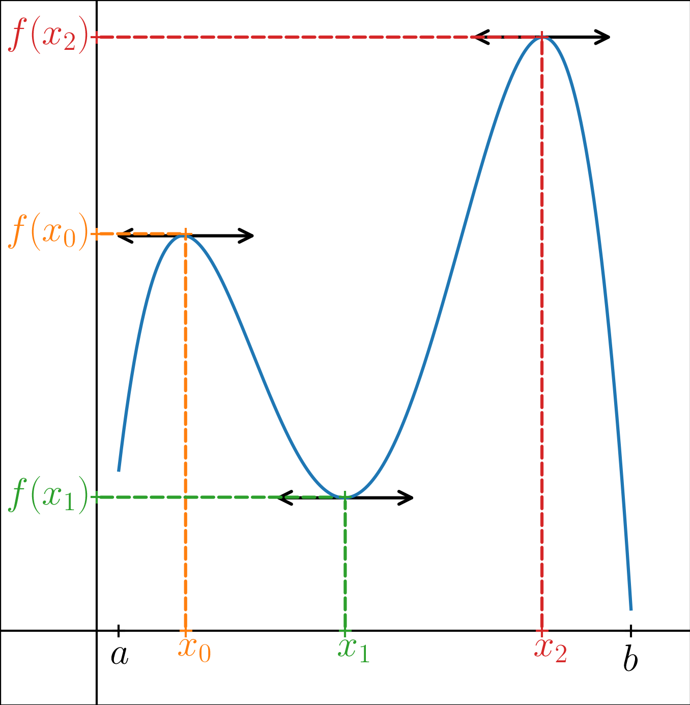
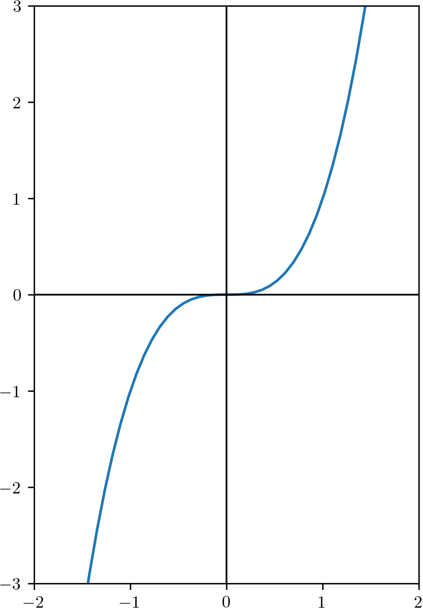
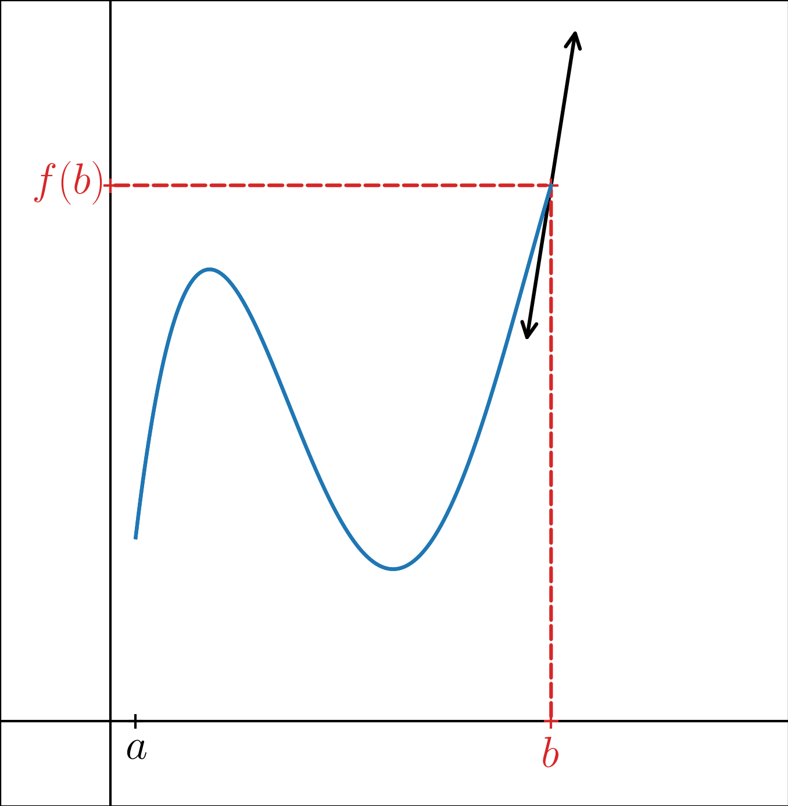
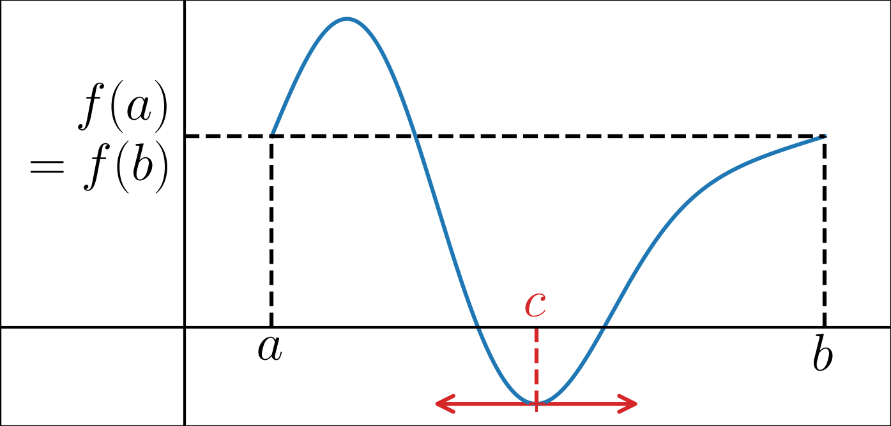
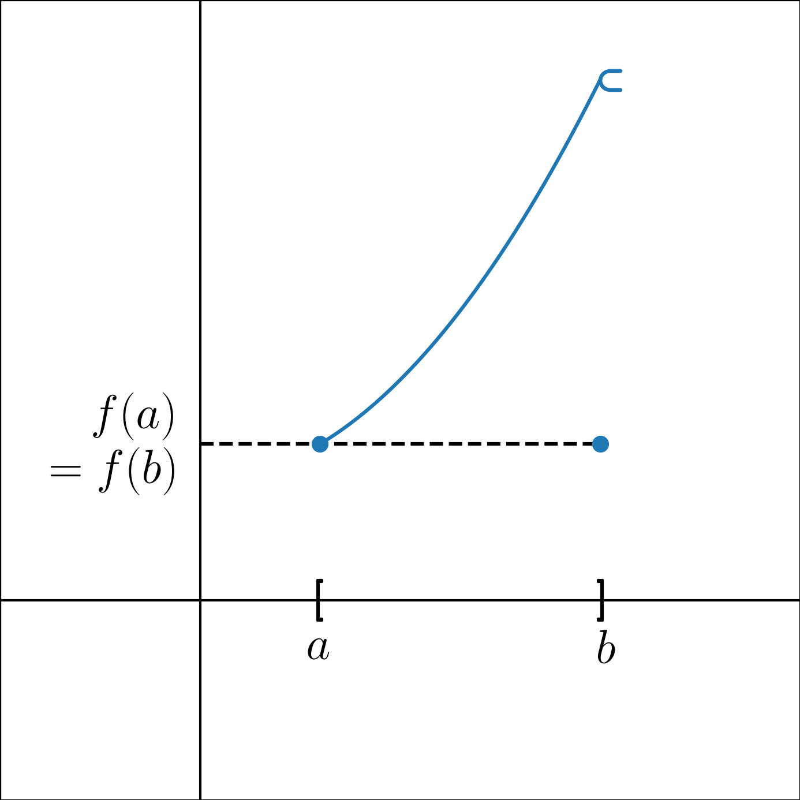
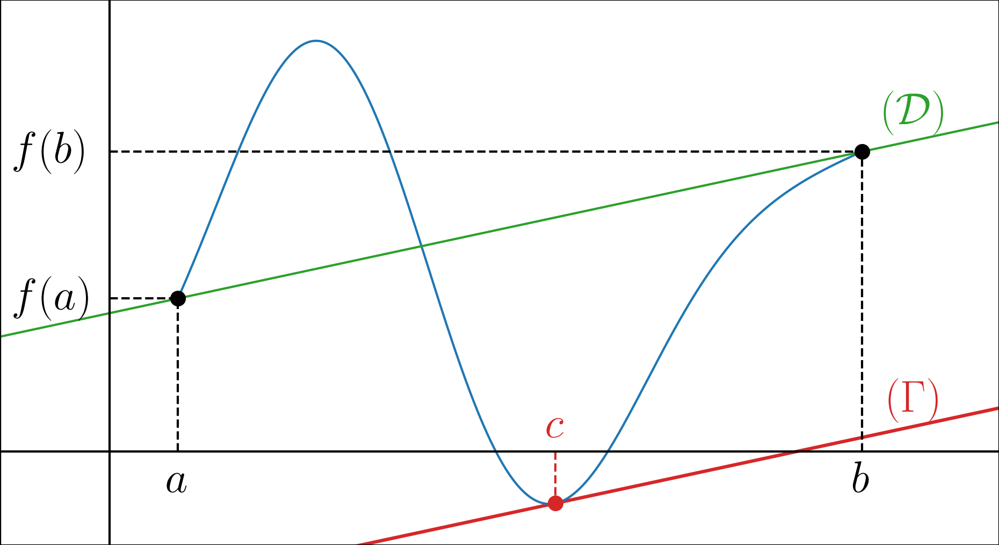
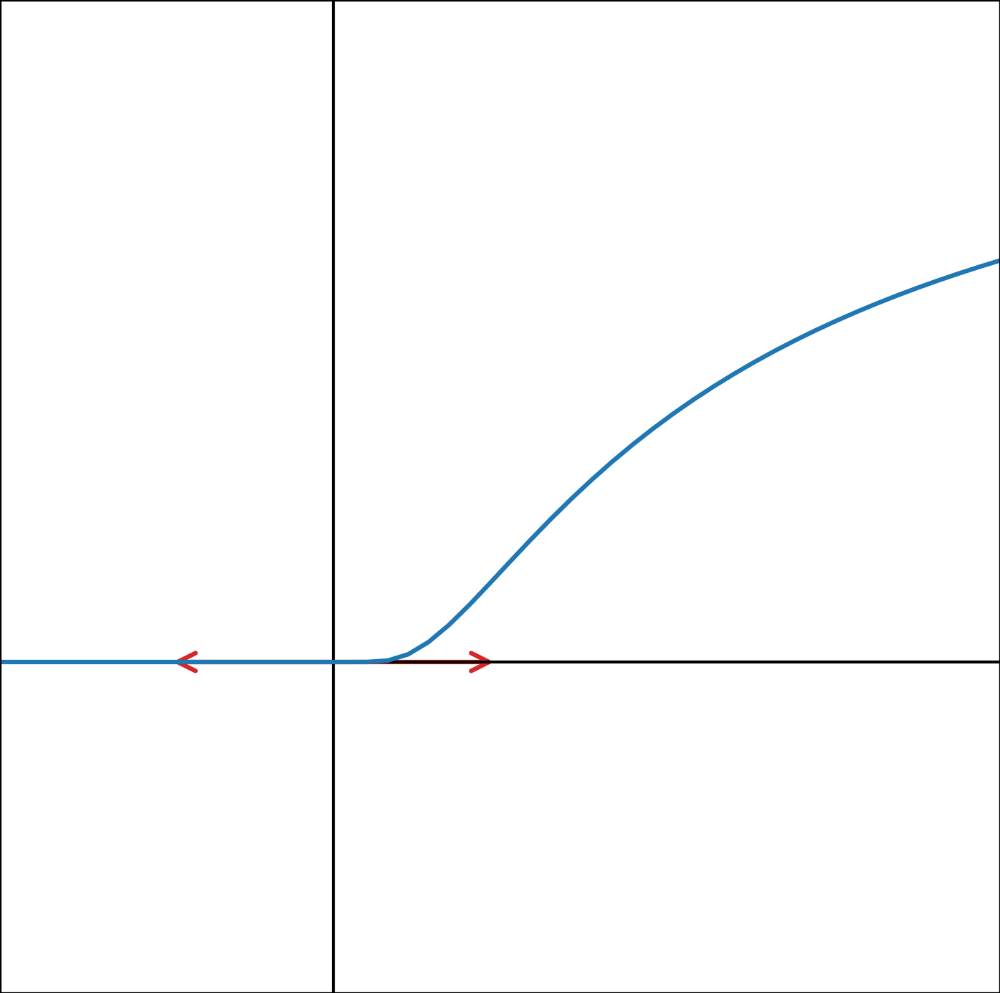

Soit \(f:I \to \mathbb{R}\) avec \(I\) un intervalle de \(\mathbb{R}\) non réduit à un point.
Soit \(x_0 \in I\), \(f\) est dérivable en \(x_0\) s’il existe \(\ell \in \mathbb{R}\) tel que \(\frac{f(x_0+h)-f(x_0)}{h}\xrightarrow[h \to 0]{} \ell\).
Dans ce cas, \(\ell\) est le nombre dérivé (ou la dérivée) de \(f\) en \(x_0\), noté \(f'(x_0)\).
Si \(f\) dérivable en \(x_0\), on peut écrire
\(f(x_0+h) = f(x_0) + hf'(x_0) + h\varphi_f(h)\) avec \(\varphi_f(h) = \frac{f(x_0+h)-f(x_0)}{h}-f'(x_0) \xrightarrow[h \to 0]{} 0\).
Soient \(f:I \to \mathbb{R}\) avec \(I\) un intervalle de \(\mathbb{R}\) non réduit à un point et \(x_0 \in I\).
On dit que \(f\) est dérivable à gauche en \(x_0\) s’il existe \(\ell_g \in \mathbb{R}\) tel que \(\frac{f(x_0+h)-f(x_0)}{h}\xrightarrow[h \to 0^-]{} \ell_g\).
Dans ce cas, \(\ell_g\) est appelé la dérivée à gauche de \(f\) en \(x_0\), noté \(f_g'(x_0)\).
On dit que \(f\) est dérivable à droite en \(x_0\) s’il existe \(\ell_d \in \mathbb{R}\) tel que \(\frac{f(x_0+h)-f(x_0)}{h}\xrightarrow[h \to 0^+]{} \ell_d\).
Dans ce cas, \(\ell_d\) est appelé la dérivée à droite de \(f\) en \(x_0\), noté \(f_d'(x_0)\).
Soient \(f:I \to \mathbb{R}\) avec \(I\) un intervalle de \(\mathbb{R}\) non réduit à un point et \(x_0 \in I\).
\(f\) est dérivable en \(x_0\) \(\iff\) \(f\) est dérivable à gauche et à droite en \(x_0\) et \(f_g'(x_0) = f_d'(x_0)\).
(\(\Longrightarrow\)) Pour \(\varepsilon >0\), il existe \(\eta_\varepsilon >0\) tel que pour tout \(h \in \mathbb{R}\) tel que \(x_0 + h \in I\), \[|h| \leq \eta_\varepsilon \Longrightarrow \left|\frac{f(x_0+h)-f(x_0)}{h}-f'(x_0)\right| \leq \varepsilon.\] Donc a fortiori, pour tout \(h \in \mathbb{R}\) tel que \(x_0 + h \in I\), \[|h| \leq \eta_\varepsilon \text{ et }h > 0 \Longrightarrow\left|\frac{f(x_0+h)-f(x_0)}{h}-f'(x_0)\right| \leq \varepsilon.\] donc \(f\) dérivable à gauche en \(x_0\) avec \(f_g'(x_0) = f'(x_0)\) et pour tout \(h \in \mathbb{R}\) tel que \(x_0 + h \in I\), \[|h| \leq \eta_\varepsilon \text{ et }h < 0 \Longrightarrow\left|\frac{f(x_0+h)-f(x_0)}{h}-f'(x_0)\right| \leq \varepsilon.\] donc \(f\) dérivable à droite en \(x_0\) avec \(f_d'(x_0) = f'(x_0)\)
(\(\Longleftarrow\)) Notons \(\ell = f_g'(x_0) = f_d'(x_0)\). Pour \(\varepsilon >0\), il existe \(\eta_\varepsilon^- >0\) tel que pour tout \(h \in \mathbb{R}\) tel que \(x_0 + h \in I\), \[|h| \leq \eta_\varepsilon^- \text{ et }h < 0 \Longrightarrow \left|\frac{f(x_0+h)-f(x_0)}{h}-\ell\right| \leq \varepsilon.\] et il existe \(\eta_\varepsilon^+ >0\) tel que pour tout \(h \in \mathbb{R}\) tel que \(x_0 + h \in I\), \[|h| \leq \eta_\varepsilon^+ \text{ et }h > 0 \Longrightarrow \left|\frac{f(x_0+h)-f(x_0)}{h}-\ell\right| \leq \varepsilon.\] Donc, a fortiori, pour tout pour tout \(h \in \mathbb{R}\) tel que \(x_0 + h \in I\), \[|h| \leq \min(\eta_\varepsilon^-,\eta_\varepsilon^+) \Longrightarrow \left|\frac{f(x_0+h)-f(x_0)}{h}-\ell\right| \leq \varepsilon.\] et \(f\) est dérivable en \(x_0\) avec \(f'(x_0) = f_g'(x_0) = f_d'(x_0)\).
On peut montrer ainsi que \(\begin{array}{lllll} f & : & \mathbb{R} & \to & \mathbb{R} \\ & & x & \mapsto & |x| \end{array}\) n’est pas dérivable en \(0\).
Pour \(h \in \mathbb{R}^{\star}\), \(\frac{f(0+h)-f(0)}{h} = \frac{f(h)}{h} = \frac{|h|}{h}\).
Donc pour \(h> 0\), \(\frac{f(0+h)-f(0)}{h} = 1 \xrightarrow[h \to 0^+]{} 1\) et pour \(h< 0\), \(\frac{f(0+h)-f(0)}{h} = -1 \xrightarrow[h \to 0^-]{} -1\).
Donc \(f\) est dérivable à droite et à gauche en \(0\) mais avec \(f_g'(0) \neq f_d'(0)\).
Donc \(f\) n’est pas dérivable en \(0\).
Soient \(f:I \to \mathbb{R}\) avec \(I\) un intervalle de \(\mathbb{R}\) non réduit à un point et \(x_0 \in I\).
Si \(f\) est dérivable en \(x_0\) alors \(f\) est continue en \(x_0\).
Soit \((u_n)\) une suite de \(I\) telle que \(u_n \xrightarrow[n \to +\infty]{} x_0\).
Alors, \(f(u_n) - f(x_0) = f(x_0+h_n)-f(x_0)\) avec \(h_n \xrightarrow[n \to +\infty]{} 0\).
Donc \[f(u_n) - f(x_0) = f(x_0+h_n)-f(x_0) = \underbrace{\frac{f(x_0+h_n)-f(x_0)}{h_n}}_{\xrightarrow[n \to +\infty]{} f'(x_0)} \underbrace{h_n}_{\xrightarrow[n \to +\infty]{} 0} \xrightarrow[n \to +\infty]{} 0.\]
Donc \(f(u_n) \xrightarrow[n \to +\infty]{} f(x_0)\) et \(f\) est continue en \(x_0\).
Comme le montre l’exemple [ex:valeur_absolue_non_der], la réciproque est fausse.
Soient \(f:I \to \mathbb{R}\), \(g:I \to \mathbb{R}\) avec \(I\) un intervalle de \(\mathbb{R}\) non réduit à un point et \(x_0 \in I\) tels que \(f\) et \(g\) sont dérivables en \(x_0\).
Alors,
\(f+g\) est dérivable en \(x_0\) de dérivée \(f'(x_0)+g'(x_0)\),
Soit \(\alpha \in \mathbb{R}\), \(\alpha f\) est dérivable en \(x_0\) de dérivée \(\alpha f'(x_0)\),
\(fg\) est dérivable en \(x_0\) de dérivée \(f'(x_0)g(x_0)+f(x_0)g'(x_0)\).
Soit \(h \in \mathbb{R}\) tel que \(x_0 +h \in I\),
\[\begin{aligned} \frac{\left(f+g\right)(x_0+h)-\left(f+g\right)(x_0)}{h} &= \frac{f(x_0+h)-f(x_0)+g(x_0+h)-g(x_0)}{h}\\ &= \frac{f(x_0+h)-f(x_0)}{h} + \frac{g(x_0+h)-g(x_0)}{h}\\ &\xrightarrow[h \to 0]{} f'(x_0) + g'(x_0). \end{aligned}\]
\[\begin{aligned} \frac{\left(\alpha f\right)(x_0+h)-\left(\alpha f\right)(x_0)}{h} &= \alpha\frac{f(x_0+h)-f(x_0)}{h} \\ &\xrightarrow[h \to 0]{} \alpha f'(x_0). \end{aligned}\]
\[\begin{aligned} \frac{\left(fg\right)(x_0+h)-\left(fg\right)(x_0)}{h} &= \frac{f(x_0+h)g(x_0+h)-f(x_0)g(x_0)}{h}\\ & = \frac{f(x_0+h)\left(g(x_0+h)-g(x_0)\right)+f(x_0+h)g(x_0)-f(x_0)g(x_0)}{h}\\ & = \frac{f(x_0+h)\left(g(x_0+h)-g(x_0)\right)+\left(f(x_0+h)-f(x_0)\right)g(x_0)}{h}\\ & = f(x_0+h)\frac{g(x_0+h)-g(x_0)}{h} + g(x_0)\frac{f(x_0+h)-f(x_0)}{h}\\ &\xrightarrow[h \to 0]{} f(x_0)g'(x_0)+f'(x_0)g(x_0) \text{ car $f$ continue en $0$}. \end{aligned}\]
Soient \(f:I \to \mathbb{R}\), avec \(I\) un intervalle de \(\mathbb{R}\) non réduit à un point et \(x_0 \in I\) tels que \(f\) est dérivable en \(x_0\) et \(f(x_0)\) est dérivable en \(x_0\).
Alors, \(\frac{1}{f}\) est définie au voisinage de \(x_0\) et est dérivable en \(x_0\) avec \(\left(\frac{1}{f}\right)'(x_0) = - \frac{f'(x_0)}{f(x_0)^2}\).
Soit \(h\) suffisamment petit tel que \(x_0+h \in I\) et \(f(x_0+h) \neq 0\).
Alors, \[\begin{aligned} \frac{\left(\frac{1}{f}\right)(x_0+h)-\left(\frac{1}{f}\right)(x_0)}{h} & = \frac{\frac{1}{f(x_0+h)}-\frac{1}{f(x_0)}}{h} \\ & = \frac{f(x_0)-f(x_0+h)}{hf(x_0+h)f(x_0)} \\ & = - \frac{1}{f(x_0+h)f(x_0)}\frac{f(x_0+h)-f(x_0)}{h} \\ & \xrightarrow[h \to 0]{}- \frac{f'(x_0)}{f(x_0)^2} \text{ car $f$ continue en $0$}. \end{aligned}\]
Soient \(f:I \to \mathbb{R}\), avec \(I\) un intervalle de \(\mathbb{R}\) non réduit à un point et \(x_0 \in I\) tels que \(f\) est dérivable en \(x_0\).
On suppose \(f(I) \subset J\) avec \(J\) un intervalle de \(\mathbb{R}\) non réduit à un point et \(g : J \to \mathbb{R}\) dérivable en \(f(x_0) \in J\).
Alors \(g\circ f : I \to \mathbb{R}\) est dérivable en \(x_0\) avec \(\left(g \circ f\right)'(x_0) = g'(f(x_0))f'(x_0)\).
Soit \(h \in \mathbb{R}\) tel que \(x_0 +h \in I\).
Alors, en reconsidérant la remarque ,
\(f(x_0+h) = f(x_0) + f'(x_0)h + h\varphi_f(h)\) avec \(\varphi_f(h) \xrightarrow[h \to 0]{} 0\)
et \(g(f(x_0)+k) = g(f(x_0)) + g'(f(x_0))k + k\varphi_g(k)\) avec \(\varphi_g(k) \xrightarrow[k \to 0]{} 0\).
Donc \[\begin{aligned} \left(g \circ f\right)(x_0+h) & = g\left[f(x_0) + f'(x_0)h + h\varphi_f(h)\right] \\ & = g\left[f(x_0) + K(h)\right] \text{ avec $K(h)=f'(x_0)h + h\varphi_f(h)$} \\ & = g(f(x_0)) + g'(f(x_0))K(h) + K(h)\varphi_g(K(h)) \end{aligned}\] et \[\begin{aligned} \frac{\left(g \circ f\right)(x_0+h)-\left(g \circ f\right)(x_0)}{h} & = g'(f(x_0))\frac{K(h)}{h} + \frac{K(h)}{h}\varphi_g(K(h)) \end{aligned}\]
et \(\frac{K(h)}{h} = f'(x_0) + \varphi_f(h) \xrightarrow[h \to 0]{} f'(x_0)\)
puis \(K(h) \xrightarrow[h \to 0]{} 0\) donc \(\varphi_g(K(h)) \xrightarrow[h \to 0]{} 0\) et \(\frac{K(h)}{h}\varphi_g(K(h)) \xrightarrow[h \to 0]{} 0\).
Finalement, \[\frac{\left(g \circ f\right)(x_0+h)-\left(g \circ f\right)(x_0)}{h} \xrightarrow[h \to 0]{} g'(f(x_0))f'(x_0).\]
Soit \(f : I \to J\) strictement monotone donc bijective, continue sur \(I\).
Alors \(J = f(I)\) est un intervalle de \(\mathbb{R}\) et on peut considérer sa fonction réciproque \(f^{-1} : J \to I\), qui est continue.
Soit \(x_0 \in I\) tel que \(f\) est dérivable en \(x_0\),
Si \(f'(x_0) \neq 0\) alors \(f^{-1}\) est dérivable en \(f(x_0)\) et \[\left(f^{-1}\right)'(f(x_0)) = \frac{1}{f'(x_0))}.\]
Si \(f'(x_0) = 0\) et \(f\) est strictement croissante sur \(I\) alors \(f^{-1}\) n’est pas dérivable en \(f(x_0)\) et \[\frac{f^{-1}(f(x_0)+h)-f^{-1}(f(x_0))}{h} \xrightarrow[h \to 0]{}+\infty.\]
Posons \(y_0 = f(x_0) \in J\). On s’intéresse au taux d’accroissement \(\frac{f^{-1}(y_0+h)-f^{-1}(y_0)}{h}\).
Posons \(k(h) = f^{-1}(y_0+h)-f^{-1}(y_0)\).
Comme \(f^{-1}\) est continue, \(k(h) \xrightarrow[h \to 0]{} 0\).
De plus, \(k(h) = f^{-1}(y_0+h)-x_0\) donc \(f(x_0+k(h)) = y_0+h\) et \(f(x_0+k(h))-f(x_0) = h\).
On a donc
\[\frac{f^{-1}(y_0+h)-f^{-1}(y_0)}{h} = \frac{k(h)}{f(x_0+k(h))-f(x_0)}.\]
et en reconsidérant la remarque [rem:approx_Euler], \[\frac{f^{-1}(y_0+h)-f^{-1}(y_0)}{h} = \frac{k(h)}{k(h)f'(x_0) + k(h)\varphi_f(k(h))} = \frac{1}{f'(x_0) + \varphi_f(k(h))}.\]
Dans le cas où \(f'(x_0) \neq 0\), comme \(k(h) \xrightarrow[h \to 0]{} 0\), on a donc \(\frac{f^{-1}(y_0+h)-f^{-1}(y_0)}{h} \xrightarrow[h \to 0]{} \frac{1}{f'(x_0)}\).
Dans le cas \(f'(x_0) = 0\) et la fonction est strictement \(f\) croissante alors \(f^{-1}\) est strictement croissante.
De plus, \(\varphi_f(k(h)) = \frac{f(x_0+k(h))-f(x_0)}{k(h)} > 0\) pour \(h \neq 0\).
En effet,
soit \(h > 0\) et alors \(k(h) = f^{-1}(y_0+h)-f^{-1}(y_0) > 0\) donc \(\frac{f(x_0+k(h))-f(x_0)}{k(h)} > 0\),
soit \(h < 0\) et alors \(k(h) = f^{-1}(y_0+h)-f^{-1}(y_0) < 0\) donc \(\frac{f(x_0+k(h))-f(x_0)}{k(h)} > 0\).
On en déduit \(\varphi_f(k(h)) \xrightarrow[h \to 0]{} 0^+\) et donc \(\frac{f^{-1}(y_0+h)-f^{-1}(y_0)}{h} = \frac{1}{\varphi_f(k(h))} \xrightarrow[h \to 0]{} +\infty\).
De même, si \(f'(x_0) = 0\) et \(f\) est strictement décroissante sur \(I\) alors \(f^{-1}\) n’est pas dérivable en \(f(x_0)\) et \[\frac{f^{-1}(f(x_0)+h)-f^{-1}(f(x_0))}{h} \xrightarrow[h \to 0]{}-\infty.\]
Soit \(f : I \to J\) une fonction bijective.
Dans un repère orthonormé \((O,\vec{i},\vec{j})\), on considère \((C)=\{ M_x = (x,f(x)) \mid x \in I \}\) la courbe représentative de \(f\) et \((C')=\{ M'_y = (y,f^{-1}(y)) \mid y \in J \}\) la courbe représentative de \(f^{-1}\).
On remarque que \((C')=\{ M'_{f(x)} = (f(x),x) \mid x \in I \}\) et donc que \((C')\) est le symétrique de \((C)\) par rapport à la droite d’équation \(y=x\).
Sachant que la pente de la tangente à \((C)\) en \(x_0\) a pour équation \(\overrightarrow{i}+f'(x_0)\overrightarrow{j}\), la droite symétrique par rapport à \(y=x\) est \(f'(x_0)\overrightarrow{i}+\overrightarrow{j}\) qui a aussi pour équation \(\overrightarrow{i}+\frac{1}{f'(x_0)}\overrightarrow{j}\) (en divisant par \(f'(x_0)\)).

Si \(f'(x_0) = 0\), \(f\) admet une tangente horizontale en \(x_0\) et \(f^{-1}\) admet donc une tangente verticale en \(f(x_0)\) (par symétrie par rapport à \(y=x\)) et est donc non dérivable en \(f(x_0)\).

\(\mathop{\mathrm{Arcsin}}\) n’est pas dérivable en \(\pm 1\) car \(\sin'\left(\pm \frac{\pi}{2}\right) = \cos\left(\pm \frac{\pi}{2}\right) = 0\). De plus, comme \(\sin\) est strictement croissante sur \(\left[-\frac{\pi}{2},\frac{\pi}{2}\right]\), \[\frac{\mathop{\mathrm{Arcsin}}(1+h)-\mathop{\mathrm{Arcsin}}(1)}{h} \xrightarrow[h \to 0]{}+\infty \text{ et }\frac{\mathop{\mathrm{Arcsin}}(-1+h)-\mathop{\mathrm{Arcsin}}(-1)}{h} \xrightarrow[h \to 0]{}+\infty\]
Soit \(n \in \mathbb{N}^{\star}\), \(\sqrt[n]{}\) est dérivable sur \(\mathbb{R}^{+\star}\).
C’est la fonction réciproque de \(f_n : x \in \mathbb{R}^+ \mapsto x^n \in \mathbb{R}^+\) et \(f_n\) est dérivable sur \(\mathbb{R}^{+}\) avec pour tout \(x\in \mathbb{R}^{+}, f_n'(x) = nx^{n-1}\).
Donc pour \(x \in \mathbb{R}^{+\star}\), \(f_n'(x) \neq 0\) et \(\left(f_n^{-1}\right)'(f_n(x)) = \frac{1}{nx^{n-1}}\).
Avec \(y = f_n(x) \iff x = y^{1/n}\), \(\left(f_n^{-1}\right)'(y) = \frac{1}{ny^{\frac{n-1}{n}}} = \frac{\sqrt[n]{y}}{ny}\).
Soit \(f : I \to \mathbb{R}\), si \(f\) est dérivable en tout point \(x_0\) de \(I\), on dit qu’elle est dérivable sur \(I\) et on peut considérer la fonction \(\begin{array}{lllll} f' & : & I & \to & \mathbb{R} \\ & & x & \mapsto & f'(x) \end{array}\).
\(f\) est dite de classe \(\mathscr{C}^1\) (lire ’c un’) sur \(I\) si \(f\) est dérivable sur \(I\) et \(f'\) est continue sur \(I\).
\(\mathscr{C}^1(I,\mathbb{R})\) désigne l’ensemble des fonctions de classe \(\mathscr{C}^1\) sur \(I\).
Si \(f \in \mathscr{C}^1(I,\mathbb{R})\), \(f\) est continue sur \(I\).
(Toute fonction dérivable n’est pas \(\mathscr{C}^1\)) Considérons \(\begin{array}{lllll} f & : & \mathbb{R} & \to & \mathbb{R} \\ & & x & \mapsto & \begin{cases} x^2\sin\left(\frac{1}{x}\right) &\mbox{ si } x \neq 0 \\ 0 &\mbox{ si } x = 0 \end{cases} \end{array}\).
Montrons que \(f\) est dérivable sur \(\mathbb{R}\) mais \(f\notin \mathscr{C}^1(\mathbb{R},\mathbb{R})\).
\(f\) est dérivable sur \(\mathbb{R}\) : En effet, d’abord, \(f\) est dérivable sur \(\mathbb{R}^{\star}\) comme produit et composition de fonction dérivable sur \(\mathbb{R}^{\star}\). On a : pour \(x\in \mathbb{R}^{\star}\), \[f'(x) = 2x\sin\left(\frac{1}{x}\right) -\cos\left(\frac{1}{x}\right).\]
Il reste à étudier sa dérivabilité en \(0\).
Or, pour \(h \neq 0\),
\[\frac{f(h)-f(0)}{h} = \frac{h^2\sin\left(\frac{1}{h}\right)}{h} = h\sin\left(\frac{1}{h}\right).\]
C’est le produit d’une fonction bornée et d’une fonction qui tend vers \(0\) (quand \(h\) tend vers \(0\)) donc \(\frac{f(h)-f(0)}{h} \xrightarrow[h \to 0]{} 0\) et \(f\) est dérivable en \(0\) avec \(f'(0) = 0\).
Montrons que \(f'\) n’est pas continue en \(0\).
Notons que pour \(x \in \mathbb{R}^{\star}\), \(\cos\left(\frac{1}{x}\right) = 1 \iff \frac{1}{x} = 2n\pi \text{ avec }n \in \mathbb{Z}^{\star}\iff x = \frac{1}{2n\pi} \text{ avec }n \in \mathbb{Z}^{\star}\).
Et \(\cos\left(\frac{1}{x}\right) = -1 \iff \frac{1}{x} = \pi+2n\pi \text{ avec }n \in \mathbb{Z}^{\star}\iff x = \frac{1}{(2n+1)\pi} \text{ avec }n \in \mathbb{Z}^{\star}\).
Donc avec \(x_n = \frac{1}{2n\pi}\) et \(x_n = \frac{1}{(2n+1)\pi}\) pour \(n \in \mathbb{N}^{\star}\),
\(x_n \xrightarrow[n \to +\infty]{} 0\), \(y_n \xrightarrow[n \to +\infty]{} 0\) mais \(f'(x_n) \xrightarrow[n \to +\infty]{} -1\) et \(f'(y_n) \xrightarrow[n \to +\infty]{} 1\).
Donc \(f'\) n’est pas continue en \(0\).
\(\mathscr{C}^1(I,\mathbb{R})\) est un sous-espace vectoriel et un sous-anneau de \(\mathscr{F}(I,\mathbb{R})\).
\(\mathscr{C}^1(I,\mathbb{R})\) est un sous-espace vectoriel de \(\mathscr{F}(I,\mathbb{R})\).
\(0_{\mathscr{F}(I,\mathbb{R})}\) est dérivable, de dérivée continue \(0_{\mathscr{F}(I,\mathbb{R})}\) donc \(0_{\mathscr{F}(I,\mathbb{R})}\in \mathscr{C}^1(I,\mathbb{R})\).
Soient \(f,g \in \mathscr{C}^1(I,\mathbb{R})\), \(f+g\) est bien dérivable de dérivée continue \(f'+g'\), comme somme de \(f'\) et \(g'\) qui sont continues.
Soit \(f \in \mathscr{C}^1(I,\mathbb{R}), \alpha \in \mathbb{R}\), \(\alpha f\) est bien dérivable de dérivée continue \(\alpha f'\) (car \(f'\) continue).
\(\mathscr{C}^1(I,\mathbb{R})\) est un sous-anneau de \(\mathscr{F}(I,\mathbb{R})\).
\(\mathscr{C}^1(I,\mathbb{R})\) est un sous-groupe de \(\mathscr{F}(I,\mathbb{R})\).
\(0_{\mathscr{F}(I,\mathbb{R})}\) est dérivable, de dérivée continue \(0_{\mathscr{F}(I,\mathbb{R})}\) donc \(0_{\mathscr{F}(I,\mathbb{R})}\in \mathscr{C}^1(I,\mathbb{R})\).
Soient \(f,g \in \mathscr{C}^1(I,\mathbb{R})\), \(f+g\) est bien dérivable de dérivée continue \(f'+g'\), comme somme de \(f'\) et \(g'\) qui sont continues.
Soit \(f \in \mathscr{C}^1(I,\mathbb{R})\), \(-f\) est bien dérivable de dérivée continue \(-f'\) (car \(f'\) continue).
\(1_{\mathscr{F}(I,\mathbb{R})}\) est dérivable de dérivée continue \(0_{\mathscr{F}(I,\mathbb{R})}\) donc \(1_{\mathscr{F}(I,\mathbb{R})}\in \mathscr{C}^1(I,\mathbb{R})\).
Soient \(f,g \in \mathscr{C}^1(I,\mathbb{R})\), \(fg\) est bien dérivable de dérivée continue \(f'g+fg'\) (car \(f,f',g,g'\) continues).
Si \(f \in \mathscr{C}^1(I,\mathbb{R})\) et \(g \in \mathscr{C}^1(J,\mathbb{R})\) avec \(J\) tel que \(f(I) \subset J\).
Alors \(g\circ f \in \mathscr{C}^1(I,\mathbb{R})\).
\(g\circ f\) est dérivable sur \(I\) de dérivée \((g'\circ f)f'\), qui est continue car
\(f\) continue et \(g'\) continue donc \(g' \circ f\) est continue par composition.
\(g' \circ f\) et \(f'\) continues donc \((g'\circ f)f'\) est continue par produit.
Si \(f \in \mathscr{C}^1(I,\mathbb{R})\), strictement monotone sur \(I\) avec pour tout \(x \in Ï, f'(x) \neq 0\).
Alors \(f^{-1} \in \mathscr{C}^1(f(I),\mathbb{R})\).
Comme \(f'\) ne s’annule pas sur \(I\), \(f^{-1}\) est dérivable sur \(f(I)\) tel que pour tout \(x \in I\), \(\left(f^{-1}\right)'(f(x)) = \frac{1}{f'(x)}\).
Donc pour tout \(y \in f(I)\), tel que \(y = f(x) \iff x = f^{-1}(y)\) avec \(x \in I\), \(p{f^{-1}}'(y) = \frac{1}{f'(x)} = \frac{1}{f'(f^{-1}(y))}\).
Donc \(\left(f^{-1}\right)' = \frac{1}{f' \circ f^{-1}}\) est continue sur \(J\) car
\(f'\) est continue sur \(I\) et \(f^{-1}\) est continue sur \(J\) donc par composition, \(f' \circ f^{-1}\) est continue sur \(J\).
\(f'\) ne s’annule pas sur \(I\) et \(f^{-1}(J) \subset I\) donc \(f' \circ f^{-1}\) ne s’annule pas sur \(J\) et \(\frac{1}{f' \circ f^{-1}}\) est continue sur \(J\).
Soit \(f : [a,b] \to \mathbb{R}\) (avec \(a < b\)) tel que \(f\) présente en \(x_0 \in ]a,b[\) un extremum local.
Alors, si \(f\) est dérivable en \(x_0\), \(f'(x_0) = 0\).
Si \(f\) présente un maximum local en \(x_0\) alors il existe \(r > 0\) tel que pour tout \(x \in I\), \(|x-x_0| \leq r \Longrightarrow f(x) \leq f(x_0)\).
Quitte à réduire \(r\), on peut supposer \([x_0-r,x_0+r] \subset [a,b]\) car \(x_0 \in ]a,b[\).
Alors, pour \(h \in ]0,r]\), \(x_0 + h \in [x_0,x_0+r] \subset [a,b]\) et \(f(x_0+h)-f(x_0) \leq 0\) donc \(\frac{f(x_0+h)-f(x_0)}{h} \leq 0\) (\(h > 0\)). Ainsi, par passage à la limite dans l’inégalité quand \(h\) tend vers \(0\), \(f'(x_0) \leq 0\).
Aussi, pour \(h \in [-r,0[\), \(x_0 - h \in [x_0-r,x_0]\subset [a,b]\) et \(f(x_0+h)-f(x_0) \leq 0\) donc \(\frac{f(x_0+h)-f(x_0)}{h} \geq 0\) (\(h < 0\)). Ainsi, par passage à la limite dans l’inégalité quand \(h\) tend vers \(0\), \(f'(x_0) \geq 0\).
On en déduit \(0 \leq f'(x_0) \leq 0\) donc \(f'(x_0) = 0\).
Si \(f\) présente un minimum local en \(x_0\), \(-f\) admet un maxmimum local en \(x_0\) et est dérivable en \(x_0\) abec \((-f)'(x_0) = -f'(x_0) = 0 \Longrightarrow f'(x_0) = 0\).
Comme illustré sur ce graphe ci-contre, avec deux maxima locaux (dont un global) et un minimum local (qui est global), les tangentes en ces points sont horizontales.

⚠️ Cette condition n’est pas suffisante.
En considérant \(\begin{array}{lllll} f & : & \mathbb{R} & \to & \mathbb{R} \\ & & x & \mapsto & x^3 \end{array}\), \(f\) est dérivable sur \(\mathbb{R}\) et \(\begin{array}{lllll} f' & : & \mathbb{R} & \to & \mathbb{R} \\ & & x & \mapsto & 3x^2 \end{array}\).
Donc \(f'(0) = 0\) mais \(f\) ne présente par d’extremum local en \(x_0 = 0\).
Comme illustré sur le graphe ci-contre, \(f\) admet bien une tangente horizontale en \(0\).

Ce résultat est faux si \(x_0 = a\) ou \(x_0 = b\), comme l’illustre ce graphe ci-contre avec \(x_0 = b\).
En revanche, si \(x_0 = b\), et \(f(x_0)\) est un maximum on peut bien affirmer que \(f'(x_0) \geq 0\).
En effet, dans la preuve, il fonctionne encore de prendre \(h\in [-r,0[\) tel que \(x_0 - h \in [x_0-r,x_0]\subset [a,b]\) et \(f(x_0+h)-f(x_0) \leq 0\) donc \(\frac{f(x_0+h)-f(x_0)}{h} \geq 0\) (\(h < 0\)) donc \(f'(x_0) \geq 0\).
En revanche, la deuxième partie ne fonctionne pas car dès que \(h > 0\), \(b+h \notin [a,b]\).
De façon similaire,
Si \(f\) est dérivable en \(b\) et admet un minimum en \(b\), \(f'(b) \leq 0\),
Si \(f\) est dérivable en \(a\) et admet un maximum en \(a\), \(f'(a) \leq 0\),
Si \(f\) est dérivable en \(a\) et admet un minimum en \(a\), \(f'(a) \geq 0\).

(Théorème de Rolle) Soit \(f : [a,b] \to \mathbb{R}\) (\(a < b\)) telle que
\(f\) continue sur \([a,b]\),
\(f\) dérivable sur \(]a,b[\),
\(f(a) = f(b)\).
Alors il existe \(c \in ]a,b[\) tel que \(f'(c) = 0\).

Cas 1 : \(f\) est constante. Dans ce cas, pour tout \(x \in [a,b], f'(x) = 0\) donc n’importe quel \(c\) de \(]a,b[\) vérifie \(f'(c) = 0\).
Cas 2 : Si \(f\) n’est pas constante, il existe \(x_0 \in ]a,b[\) tel que \(x_0 \neq f(a) = f(b)\) et par exemple, \(f(x_0) > f(a)\) (la preuve est similaire si \(f(x_0) < f(a)\)).
De plus, \(f\) est continue sur le segment \([a,b]\) donc \(f\) atteint ses bornes et en particulier il existe \(c \in [a,b]\) tel que \(f(c) = M = \sup_{x \in [a,b]} f(x)\).
Or, \(M \geq f(x_0) > f(a)=f(b)\). Donc \(c \in ]a,b[\) et par ce qui précède, comme \(c\) est un maximum global donc local, \(f'(c) = 0\).
Si on enlève l’hypothèse \(f\) continue sur \([a,b]\) et que l’on garde juste \(f\) dérivable sur \(]a,b[\) (donc \(f\) continue sur \(]a,b[\)) et \(f(a) = f(b)\), le théorème ne fonctionne plus comme l’illustre le contre-exemple ci-contre.

(Théorème des accroissements finis) Soit \(f : [a,b] \to \mathbb{R}\) (\(a < b\)) telle que
\(f\) continue sur \([a,b]\),
\(f\) dérivable sur \(]a,b[\),
Alors il existe \(c \in ]a,b[\) tel que \(f'(c) = \frac{f(b)-f(a)}{b-a}\).
La droite \((\mathcal{D})\) passant par \((a,f(a))\) et \((b,f(b))\) s’écrit \(y = \frac{f(b)-f(a)}{b-a}(x-a)+f(a)\).
En effet,
en \(x=a\), \(y = \frac{f(b)-f(a)}{b-a}(a-a)+f(a) = f(a)\)
et en \(x=b\), \(y = \frac{f(b)-f(a)}{b-a}(b-a)+f(a) = f(b)-f(a)+f(a) = f(b)\).
Donc \(\frac{f(b)-f(a)}{b-a}\) est la pente de \((\mathcal{D})\).
Le théorème des accroissements finis dit qu’il existe un point \(c\) dont la tangente \((\Gamma)\) à la courbe de \(f\) est parallèle à la droite \((\mathcal{D})\).

Considérons \(h : x \in \mathbb{R}\mapsto \frac{f(b)-f(a)}{b-a}(x-a)+f(a)\).
Alors, la courbe de \(h\) est la droite \((\mathcal{D})\) et \(h(a) = f(a), h(b) = f(b)\).
De plus, \(h\) est continue et dérivable sur \(\mathbb{R}\), de dérivée constante \(\begin{array}{lllll} h' & : & \mathbb{R} & \to & \mathbb{R} \\ & & x & \mapsto & \frac{f(b)-f(a)}{b-a} \end{array}\).
Maintenant, considérons \(\begin{array}{lllll} g & : & [a,b] & \to & \mathbb{R} \\ & & x & \mapsto & f(x)-h(x) \end{array}\).
Alors,
\(g\) est continue sur \([a,b]\),
\(g\) est dérivable sur \(]a,b[\),
\(g(a) = g(b) = 0\).
Donc, par théorème de Rolle, il existe \(c \in ]a,b[\) tel que \(g'(c) = 0\).
Or, \(g'(x) = f'(c) - h'(c) = f'(c) - \frac{f(b)-f(a)}{b-a}\) donc \(f'(c) = \frac{f(b)-f(a)}{b-a}\).
Si \(f(a) = f(b)\), \(\frac{f(b)-f(a)}{b-a} = 0\) et on retombe sur le théorème de Rolle.
Soit \(f : I \to \mathbb{R}\) avec \(I\) intervalle quelconque de \(\mathbb{R}\) et \(f\) dérivable sur \(I\).
Alors,
\(f\) croissante sur \(I\) \(\iff \forall x \in I, f'(x) \geq 0\),
\(f\) décroissante sur \(I\) \(\iff \forall x \in I, f'(x) \leq 0\),
\(f\) constante sur \(I\) \(\iff \forall x \in I, f'(x) \geq 0\),
De plus,
Si pour tout \(x \in I\), \(f'(x) > 0\) alors \(f\) est strictement croissante sur \(I\).
Si pour tout \(x \in I\), \(f'(x) < 0\) alors \(f\) est strictement décroissante sur \(I\).
Commençons par montrer \(f\) croissante sur \(I\) \(\iff \forall x \in I, f'(x) \geq 0\).
\((\Longrightarrow)\) Soit \(x_0 \in I\) et \(h \in \mathbb{R}^+\) tel que \(x_0+h \in I\).
Alors, comme \(f\) est croissante, \(\frac{f(x_0+h)-f(x_0)}{h} > 0\). En effet, soit \(h > 0\) et \(x_0+h > x_0\) donc \(f(x_0+h)-f(x_0) > 0\) et \(\frac{f(x_0+h)-f(x_0)}{h} >0\).
Soit \(h < 0\) et \(x_0+h < x_0\) donc \(f(x_0+h)-f(x_0) < 0\) et \(\frac{f(x_0+h)-f(x_0)}{h} >0\) (car \(h < 0\)).
Donc, par passage à la limite \(h \longrightarrow 0\) dans l’inégalité, \(f'(x_0) \geq 0\).
\((\Longleftarrow)\) Soient \(a < b \in I\), comme \(I\) est un intervalle, \([a,b] \subset I\).
De plus, en appliquant le théorème des accroissements finis à \(f\) sur \([a,b]\), il existe \(c \in ]a,b[\) tel que \(f'(c) = \frac{f(b)-f(a)}{b-a}\).
Donc \(\frac{f(b)-f(a)}{b-a} \geq 0 \Longrightarrow f(b)-f(a) \geq 0 \Longrightarrow f(a) \leq f(b)\).
Donc \(f\) est croissante.
Notons que si \(f'\) est strictement positive sur \(I\), on obtient \(f\) strictement croissante.
\[\begin{aligned} f \text{ décroissante sur $I$} & \iff -f \text{ croissante sur $I$} \\ & \iff \forall x \in I, (-f)'(x) = -f'(x) \geq 0 \\ & \iff \forall x \in I, f'(x) \leq 0. \end{aligned}\]
\[\begin{aligned} f \text{ constante sur $I$} & \iff f \text{ croissante et décroissante sur $I$} \\ & \iff \forall x \in I, 0 \leq f'(x) \leq 0 \\ & \iff \forall x \in I, f'(x) = 0. \end{aligned}\]
En revanche, on n’a pas "Si \(f\) est strictement croissante sur \(I\) alors pour tout \(x \in I\), \(f'(x) > 0\)" comme l’illustre \(\begin{array}{lllll} f & : & \mathbb{R} & \to & \mathbb{R} \\ & & x & \mapsto & x^3 \end{array}\) qui est strictement croissante mais avec \(f'(0) = 0\).
Soit \(f : I:=I_1 \cup I_2 \to \mathbb{R}\) avec \(I_1, I_2\) intervalles disjoints de \(\mathbb{R}\). Alors \(f'\) positive sur \(I\) implique \(f\) croissante sur \(I_1\) et \(f\) croissante sur \(I_2\) mais en général pas \(f\) croissante sur \(I\).
Pour \(f : x \in \mathbb{R}^{+\star} \cup \mathbb{R}^{-\star} \mapsto \frac{1}{x} \in \mathbb{R}\), \(\forall x \in \mathbb{R}^\star, f'(x) = -\frac{1}{x^2} < 0\). En revanche, \(f\) n’est pas strictement décroissante sur \(\mathbb{R}\) car \(f(1) = 1 > -1 = f(-1)\).

Soit \(f : [a,b] \to \mathbb{R}\) (avec \(a<b\)), continue sur \([a,b]\) et dérivable sur \(]a,b[\) avec pour tout \(x \in ]a,b[, f'(x) > 0\).
Alors, \(f\) est strictement croissante sur \([a,b]\).
Soient \(x,y \in [a,b]\) tels que \(x < y\).
Par l’égalité des accroissements finis appliquées à \(f\) sur \([x,y]\),
il existe \(c_{xy} \in ]x,y[\) tel que \(0 < f'(c_{xy}) = \frac{f(y)-f(x)}{y-x}\). Donc \(f(x) < f(y)\).
Ceci étant valable pour \(x = a\) ou \(y = b\), \(f\) est strictement croissante sur \([a,b]\).
\(\sqrt{}\) est strictement croissante sur \(\mathbb{R}^{+}\),
\(x \in \mathbb{R}\to x^2\) est strictement croissante sur \(\mathbb{R}^{+}\),
\(\mathop{\mathrm{ch}}\) est strictement croisante sur \(\mathbb{R}^{+}\).
(du théorème des accroissements finis) Soit \(f : [a,b] \to \mathbb{R}\) (\(a < b\)) telle que
\(f\) continue sur \([a,b]\),
\(f\) dérivable sur \(]a,b[\),
Supposons de plus que \(f'\) est bornée sur \(]a,b[\) ie il existe \(M \in \mathbb{R}^{+}\) tel que pour tout \(x \in ]a,b[, |f'(x)| \leq M\).
Alors, \(|f(b)-f(a)| \leq M(b-a)\).
Par le théorème des accroissements finis, il existe \(c \in ]a,b[\) tel que \(f'(c) = \frac{f(b)-f(a)}{b-a}\).
Donc \(|f(b)-f(a)| = \left|f'(c)\right|(b-a) \leq M(b-a)\).
Soit \(f : I \to \mathbb{R}\) avec \(I\) intervalle quelconque de \(\mathbb{R}\) et \(f\) dérivable sur \(I\).
\(f\) lipschitzienne sur \(I\) \(\iff\) \(f'\) bornée sur \(I\).
\((\Longrightarrow)\) Si \(f\) lipschitzienne sur \(I\), il existe \(k \geq 0\) tel que pour tout \(x,y \in I\), \(|f(y)-f(x)| \leq k |y-x|\).
Donc, soit \(x_0 \in I\) et \(h \in \mathbb{R}\) tel que \(x_0+h \in I\),
\(|f(x_0+h)-f(x_0)| \leq k |x_0+h-x_0| = |h|\) donc \(\left|\frac{f(x_0+h)-f(x_0)}{h}\right| \leq k\)
et par passage à la limite dans l’inégalité quand \(h \longrightarrow 0\), \(|f'(x_0)| \leq k\).
Donc \(f'\) est bornée sur \(I\).
\((\longleftarrow)\) Si \(f'\) bornée sur \(I\), il existe \(M \in \mathbb{R}^{+}\) tel que pour tout \(x \in I\), \(|f'(x)| \leq M\).
Soient \(x \leq y \in I\), \(I\) est un intervalle donc \([x,y] \subset I\).
Si \(x < y\), par inégalité des accroissements finis appliqué à \(f\) sur \([x,y]\), on a donc \(|f(y)-f(x)| \leq M(y-x)=M|y-x|\).
Si \(x = y\), on a \(|f(y)-f(x)| =0 \leq 0=M|y-x|\).
Donc pour tout \(x,y \in I\), \(|f(y)-f(x)| \leq M|y-x|\).
(Très importante en pratique) Soit \(f : I \to \mathbb{R}\) avec \(I\) un intervalle de \(\mathbb{R}\) et \(x_0 \in I\).
On suppose \(f\) continue sur \(I\) et dérivable sur \(I \setminus \left\{x_0\right\}\).
S’il existe \(\ell \in \mathbb{R}\) tel que \(f'(x) \xrightarrow[x \to x_0]{} \ell\) alors \(f\) esrt dérivable en \(x_0\) avec \(f'(x_0) = \ell\).
De plus, \(f'\) est continue en \(x_0\).
Commençons par montrer que \(f\) est bien dérivable en \(x_0\).
Soit \(h \in \mathbb{R}^{+\star}\) tel que \(x_0+h \in I\), alors comme \(I\) est un intervalle, \([x_0,x_0+h] \subset I\) (si \(h> 0\)) ou \([x_0+h,x_0] \subset I\) (si \(h< 0\)).
De plus,
\(f\) est continue sur \([x_0,x_0+h]\) (si \(h> 0\)) ou \([x_0+h,x_0]\) (si \(h< 0\)),
\(f\) est dérivable sur \(]x_0,x_0+h]\) (si \(h> 0\)) ou \(]x_0+h,x_0]\) (si \(h< 0\)),
Donc en appliquant l’égalité des accroissements finis à \(f\) sur \([x_0,x_0+h]\) (si \(h> 0\)) ou \([x_0+h,x_0]\) (si \(h< 0\)),
il existe \(c_h \in ]x_0,x_0+h[\) (si \(h> 0\)) ou \(c_h \in ]x_0+h,x_0[\) (si \(h< 0\)), tel que \(\frac{f(x_0+h)-f(x_0)}{h} = f'(c_{h})\).
De plus, \(x_0 \leq c_h \leq x_0 +h\) (si \(h> 0\)) ou \(x_0+h \leq c_h \leq x_0\) (si \(h< 0\)).
Donc \(c_h \xrightarrow[h \to 0]{} x_0\) et \(f'(c_{h}) \xrightarrow[h \to 0]{} \ell\).
On en déduit \(\frac{f(x_0+h)-f(x_0)}{h}\xrightarrow[h \to 0]{} \ell\) et \(f\) est dérivable en \(x_0\) avec \(f'(x_0) = \ell\).
De plus, \(f'(x) \xrightarrow[x \to x_0]{} \ell = f'(x_0)\) donc \(f'\) est continue en \(x_0\).
Soit \(\alpha > 1\), montrons que \(\begin{array}{lllll} f_\alpha & : & \mathbb{R}^{+\star} & \to & \mathbb{R} \\ & & x & \mapsto & x^\alpha \end{array}\) est prolongeable en une fonction \(\mathscr{C}^1\) sur \(\mathbb{R}^{+}\) avec \(f(0) = 0\) et \(f'(0) = 0\).
Sans utiliser la proposition précédente, il faut montrer :
\(f_\alpha\) est prolongeable en une fonction continue en \(0\),
\(f_\alpha\) est dérivable en \(0\),
\(f'_\alpha\) est continue en \(0\).
Allons-y.
Pour \(x \in \mathbb{R}^{+\star}\), \(f_\alpha(x) = e^{\alpha \ln(x)}\).
\(\ln(x) \xrightarrow[x \to 0]{} -\infty\) donc \(\alpha\ln(x) \xrightarrow[x \to 0]{} -\infty\) donc \(e^{\alpha \ln(x)} \xrightarrow[x \to 0]{} 0\).
Donc \(f_\alpha\) est prolongeable en une fonction continue en \(0\) avec \(f(0) = 0\).
Pour \(h \in \mathbb{R}^{+\star}\),
\[\frac{f_\alpha (h)-f_\alpha (0)}{h} = \frac{h^\alpha}{h} = h^{\alpha-1}.\]
Donc pour \(\alpha > 1\), comme dans le point précédent, \(\frac{f_\alpha (h)-f_\alpha (0)}{h} \xrightarrow[h \to 0]{} 0\) et \(f_\alpha\) est dérivable en \(0\) avec \(f_\alpha'(0) = 0\).
Pour \(x \in \mathbb{R}^{+\star}\), \(f_\alpha'(x) = \alpha x^{\alpha - 1}\).
Donc pour \(\alpha > 1\), \(f_\alpha'(x) \xrightarrow[x \to 0]{} 0 = f'_\alpha(0)\).
Donc \(f'_\alpha\) est continue en \(0\).
En utilisant la proposition précédente, il suffit de montrer :
\(f_\alpha\) est prolongeable en une fonction continue en \(0\),
\(f'_\alpha\) admet une limite finie en \(0\),
Allons-y.
Pour \(x \in \mathbb{R}^{+\star}\), \(f_\alpha(x) = e^{\alpha \ln(x)}\).
\(\ln(x) \xrightarrow[x \to 0]{} -\infty\) donc \(\alpha\ln(x) \xrightarrow[x \to 0]{} -\infty\) donc \(e^{\alpha \ln(x)} \xrightarrow[x \to 0]{} 0\).
Donc \(f_\alpha\) est prolongeable en une fonction continue en \(0\) avec \(f(0) = 0\).
Pour \(x \in \mathbb{R}^{+\star}\), \(f_\alpha'(x) = \alpha x^{\alpha - 1}\).
Donc pour \(\alpha > 1\), \(f_\alpha'(x) \xrightarrow[x \to 0]{} 0\).
Donc \(f_\alpha\) est prolongeable en une fonction \(\mathscr{C}^1\) sur \(\mathbb{R}^{+}\) avec \(f_\alpha'(0) = 0\).
Montrer que \(\begin{array}{lllll} f & : & \mathbb{R} & \to & \mathbb{R} \\ & & x & \mapsto & \begin{cases} e^{-\frac{1}{x}} & \mbox{ si $x > 0$} \\ 0 & \mbox{ si $x \leq 0$} \end{cases} \end{array}\) est de classe \(\mathscr{C}^1\) sur \(\mathbb{R}\).
\(f\) est bien continue sur \(\mathbb{R}\) car elle est clairement continue sur \(\mathbb{R}^{+}\) et \(\mathbb{R}^{-}\) et \(f(x) \xrightarrow[x \to 0^+]{} 0\) et \(f(x) \xrightarrow[x \to 0^-]{} 0\).
\(f\) est bien \(\mathscr{C}^1\) sur \(\mathbb{R}^{\star}= \mathbb{R}^{+\star}\cup \mathbb{R}^{-\star}\) par produit et compositions de fonctions \(\mathscr{C}^1\) et pour \(x \in \mathbb{R}^{\star}\), \(\begin{array}{lllll} f' & : & \mathbb{R}^{\star} & \to & \mathbb{R} \\ & & x & \mapsto & \begin{cases} \frac{1}{x^2}e^{-\frac{1}{x}} & \mbox{ si $x > 0$} \\ 0 & \mbox{ si $x < 0$} \end{cases} \end{array}\).
De plus, \(f'(x) \xrightarrow[x \to 0^-]{} 0\)
et par croissances comparées, pour \(x > 0\), \(\frac{1}{x^2}e^{-\frac{1}{x}} = f'(x) \xrightarrow[x \to 0^+]{} 0\).
Donc \(f\) est \(\mathscr{C}^1\) sur \(\mathbb{R}\) avec \(f'(0) = 0\).

Soit \(f : I \to \mathbb{R}\).
Par convention, on note \(f^{(0)} = f\).
Si \(f\) est dérivable sur \(I\), on note \(f^{(1)}\) ou \(f'\) sa fonction dérivée sur \(I\).
Si \(f\) est dérivable sur \(I\) et \(f' : I \to \mathbb{R}\) est dérivable sur \(I\), on dit que \(f'\) est deux fois dérivables sur \(I\) et dans ce cas, on note \(f''\) ou \(f^{(2)}\) la fonction \((f')'\), qui est appelée la dérivée seconde (ou d’ordre \(2\)) de \(f\).
On peut définir ensuite récursivement : si \(f\) est \(n\) fois dérivable (avec \(n \geq 1\)) ie \(f\) dérivable, \(f'\) dérivable, \(\ldots\), \(f^{(n-1)}\) dérivable,
on note \(f^{(k)}\) sa dérivée d’ordre \(k\) tel que pour \(1 \leq k \leq n\), \(f^{(k)} = \left(f^{k-1}\right)'\).
Soient \(f : I \to \mathbb{R}\) et \(g : I \to \mathbb{R}\) des fonctions \(n\) dois dérivables sur \(I\) (avec \(n \geq 0\)) alors
\(f+g\) est \(n\) fois dérivable sur \(I\) avec \(\left(f+g\right)^{(n)} = f^{(n)}+g^{(n)}\),
Pour \(\alpha \in \mathbb{R}\), \(\alpha f\) est \(n\) fois dérivable sur \(I\) avec \(\left(\alpha f\right)^{(n)} = \alpha f^{(n)}\),
\(fg\) est \(n\) fois dérivable sur \(I\) avec \[\tag{Formule de Leibniz} \left(fg\right)^{(n)} = \sum_{k=0}^n\binom{n}{k}f^{(k)}g^{(n-k)}.\]
Chacun des points de la proposition se prouve par récurrence sur \(n\). Nous prouvons ici seulement le dernier (les autres étant laissés à la charge du lecteur).
INITIALISATION : Si \(n = 0, \left(fg\right)^{(0)} = fg = \sum_{k=0}^0 \binom{0}{k}f^{(k)}g^{(0-k)} = \binom{0}{0}f^{(0)}g^{(0)}\).
HÉRÉDITÉ : Supposons que pour \(n \in \mathbb{N}^\star\) fixé, et \(f,g\) \(n\) fois dérivables, \(\left(fg\right)^{(n)} = \sum_{k=0}^n\binom{n}{k}f^{(k)}g^{(n-k)}\).
On a alors pour \(f,g\) \(n+1\) fois dérivables, par hypothèse de récurrence \(\left(fg\right)^{(n)} = \sum_{k=0}^n\binom{n}{k}f^{(k)}g^{(n-k)}\) qui est dérivable avec \[\begin{aligned} \left(\left(fg\right)^{(n)}\right)' & =\left(fg\right)^{(n+1)} \\ & = \left(\sum_{k=0}^n\binom{n}{k}f^{(k)}g^{(n-k)}\right)' \text{ par hypothèse de récurrence}\\ & = \sum_{k=0}^n\binom{n}{k}\left(f^{(k)}g^{(n-k)}\right)' \\ & = \sum_{k=0}^n \binom{n}{k}\left(f^{(k+1)}g^{(n-k)}\right)+\sum_{k=0}^n \binom{n}{k}\left(f^{(k+1)}g^{(n-k+1)}\right) \text{ par dérivée du produit}\\ & = \underbrace{\sum_{k=0}^n \binom{n}{k}\left(f^{(k+1)}g^{(n-k)}\right)}_{= S_1} + \sum_{k=0}^n \binom{n}{k}\left(f^{(k+1)}g^{(n-k+1)}\right) \end{aligned}\] En utilisant le changement d’indice \(\ell = k+1\), \[S_1 = \displaystyle\sum_{\ell = 1}^{n+1}\binom{n}{\ell-1}f^{(\ell)} g^{(n-(\ell-1))}=\sum_{\ell = 1}^{n+1}\binom{n}{\ell-1}f^{(\ell)} g^{(n+1-\ell)}\]
D’où : \[\begin{aligned} (a+b)^{n+1} & = \sum_{\ell = 1}^{n+1}\binom{n}{\ell-1}f^{(\ell)} g^{(n+1-\ell)}+\sum_{\ell=0}^n \binom{n}{\ell}\left(f^{(\ell+1)}g^{(n-\ell+1)}\right) \\ & = \sum_{\ell = 1}^{n}\binom{n}{\ell-1}f^{(\ell)} g^{(n+1-\ell)} + \binom{n}{n}f^{(n+1)}g^{(0)}+ \binom{n}{0}f^{(0)}g^{(n+1)}+ \sum_{\ell=1}^{n}\binom{n}{\ell-1}f^{(\ell)} g^{(n+1-\ell)} \\ & = \underbrace{\binom{n}{n}}_{ =1= \binom{n+1}{n+1}}f^{(n+1)}g^{(0)}+ \underbrace{\binom{n}{0}}_{=1=\binom{n+1}{0}}f^{(0)}g^{(n+1)}+\sum_{\ell=1}^{n}\underbrace{\left(\binom{n}{\ell-1} + \binom{n}{\ell}\right)}_{ = \binom{n+1}{\ell}}f^{(\ell)} g^{(n+1-\ell)} \\ & = \sum_{\ell=0}^{n+1} \binom{n+1}{\ell}f^{(\ell)} g^{(n+1-\ell)} \end{aligned}\] Conclusion : \(\forall n \in \mathbb{N}\), on a \(\left(fg\right)^{(n)} = \sum_{k=0}^n\binom{n}{k}f^{(k)}g^{(n-k)}\).
Soit \(f : I \to \mathbb{R}\).
Par convention \(f\) est de classe \(\mathscr{C}^0\) (lire ’c zéro’) si \(f\) est continue.
Soit \(n \in \mathbb{N}^{\star}\), \(f\) est de classe \(\mathscr{C}^n\) (lire ’c \(n\)’) si \(f\) est \(n\) fois dérivable et \(f^{(n)}\) est continue.
\(f\) est de classe \(\mathscr{C}^\infty\) (lire ’c infini’) si \(f\) est de classe \(\mathscr{C}^n\) pour tout \(n \in \mathbb{N}\).
Pour \(n \in \mathbb{N}\), on note \(\mathscr{C}^n(I,\mathbb{R})\) l’ensemble des fonctions de classe \(\mathscr{C}^n\) sur \(I\) et on note \(\mathscr{C}^\infty(I,\mathbb{R})\) l’ensemble des fonctions de classe \(\mathscr{C}^\infty\) sur \(I\).
Si \(f\) est de classe \(\mathscr{C}^n\) sur \(I\) alors pour tout \(0 \leq k \neq n-1\), \(f\) est de classe \(\mathscr{C}^{k}\) sur \(I\) (car \(f\) dérivable \(\Longrightarrow\) \(f\) continue).
Soit \(n \in \mathbb{N}^{\star}\), \(\mathscr{C}^n(I,\mathbb{R})\) est un sous-espace vectoriel et un sous-anneau de \(\mathscr{F}(I,\mathbb{R})\).
\(\mathscr{C}^n(I,\mathbb{R})\) est un sous-espace vectoriel de \(\mathscr{F}(I,\mathbb{R})\).
\(0_{\mathscr{F}(I,\mathbb{R})}\) est \(n\) fois dérivable, de dérivée \(n\)-ième \(\left(0_{\mathscr{F}(I,\mathbb{R})}\right)^{(n)} = 0_{\mathscr{F}(I,\mathbb{R})}\) donc \(0_{\mathscr{F}(I,\mathbb{R})}\in \mathscr{C}^n(I,\mathbb{R})\).
Soient \(f,g \in \mathscr{C}^n(I,\mathbb{R})\), \(f+g\) est bien \(n\) fois dérivable de dérivée \(n\)-ième continue \(f^{(n)}+g^{(n)}\), comme somme de \(f^{(n)}\) et \(g^{(n)}\) qui sont continues.
Soit \(f \in \mathscr{C}^n(I,\mathbb{R}), \alpha \in \mathbb{R}\), \(\alpha f\) est bien \(n\) fois dérivable de dérivée \(n\)-ième continue \(\alpha f^{(n)}\) (car \(f^{(n)}\) continue).
\(\mathscr{C}^n(I,\mathbb{R})\) est un sous-anneau de \(\mathscr{F}(I,\mathbb{R})\).
\(\mathscr{C}^n(I,\mathbb{R})\) est un sous-groupe de \(\mathscr{F}(I,\mathbb{R})\).
\(0_{\mathscr{F}(I,\mathbb{R})}\) est \(n\) fois dérivable, de dérivée \(n\)-ième \(\left(0_{\mathscr{F}(I,\mathbb{R})}\right)^{(n)} = 0_{\mathscr{F}(I,\mathbb{R})}\) donc \(0_{\mathscr{F}(I,\mathbb{R})}\in \mathscr{C}^n(I,\mathbb{R})\).
Soient \(f,g \in \mathscr{C}^n(I,\mathbb{R})\), \(f+g\) est bien \(n\) fois dérivable de dérivée \(n\)-ième continue \(f^{(n)}+g^{(n)}\), comme somme de \(f^{(n)}\) et \(g^{(n)}\) qui sont continues.
Soit \(f \in \mathscr{C}^n(I,\mathbb{R})\), \(-f\) est bien \(n\) fois dérivable de dérivée \(n\)-ième continue \(-f^{(n)}\) (car \(f^{(n)}\) continue).
\(1_{\mathscr{F}(I,\mathbb{R})}\) est \(n\) fois dérivable, de dérivée \(n\)-ième \(\left(0_{\mathscr{F}(I,\mathbb{R})}\right)^{(n)} = 0_{\mathscr{F}(I,\mathbb{R})}\) donc \(0_{\mathscr{F}(I,\mathbb{R})}\in \mathscr{C}^n(I,\mathbb{R})\).
Soient \(f,g \in \mathscr{C}^1(I,\mathbb{R})\), \(fg\) est bien \(n\) fois dérivable de dérivée \(\left(fg\right)^{(n)} = \sum_{k=0}^n\binom{n}{k}f^{(k)}g^{(n-k)}\).
De plus, \(f^{(k)}\) et \(g^{(k)}\) sont continues pour \(0 \leq k \leq n\) donc \(\left(fg\right)^{(n)}\) est continue comme somme de produits de fonctions continues.
Soit \(n \in \mathbb{N}\) et \(f \in \mathscr{C}^n(I,\mathbb{R})\) telle que \(f(x) \neq 0\) pour tout \(x \in I\).
Alors \(\frac{1}{f} \in \mathscr{C}^n(I,\mathbb{R})\).
Prouvons ce résultat par récurrence sur \(n\).
INITIALISATION : Si \(n = 0\), et \(f\) est continue et ne s’annule pas sur \(I\) alors \(\frac{1}{f}\) est continue.
HÉRÉDITÉ : Supposons pour \(n \in \mathbb{N}\) fixé que pour \(f \in \mathscr{C}^n(I,\mathbb{R})\) telle que \(f(x) \neq 0\) pour tout \(x \in I\). Alors \(\frac{1}{f} \in \mathscr{C}^n(I,\mathbb{R})\).
Soit \(f \in \mathscr{C}^{n+1}(I,\mathbb{R})\) telle que \(f(x) \neq 0\) pour tout \(x \in I\).
Alors, \(f\) est dérivable sur \(I\) avec \(\left(\frac{1}{f}\right)' = -\frac{f'}{f^2}\) qui est continue sur \(I\).
De plus, \(f' \in \mathscr{C}^n(I,\mathbb{R})\) et par hypothèse de récurrence \(\frac{1}{f} \in \mathscr{C}^n(I,\mathbb{R})\) donc \(\frac{1}{f^2} \in \mathscr{C}^n(I,\mathbb{R})\) (comme produit de fonctions de \(\mathscr{C}^n(I,\mathbb{R})\)).
Donc \(\left(\frac{1}{f}\right)' = -\frac{f'}{f^2} \in \mathscr{C}^n(I,\mathbb{R})\) et \(\frac{1}{f} \in \mathscr{C}^{n+1}(I,\mathbb{R})\).
Conclusion : Soit \(n \in \mathbb{N}^{\star}\) et \(f \in \mathscr{C}^n(I,\mathbb{R})\) telle que \(f(x) \neq 0\) pour tout \(x \in I\) alors \(\frac{1}{f} \in \mathscr{C}^n(I,\mathbb{R})\).
Soit \(n \in \mathbb{N}\), si \(f \in \mathscr{C}^n(I,\mathbb{R})\) et \(g \in \mathscr{C}^n(J,\mathbb{R})\) avec \(J\) tel que \(f(I) \subset J\).
Alors \(g\circ f \in \mathscr{C}^n(I,\mathbb{R})\).
Prouvons ce résultat par récurrence sur \(n\).
INITIALISATION : Si \(n = 0\), et \(f\) et \(g\) continues donc \(g \circ f\) est bien continue sur \(I\).
HÉRÉDITÉ : Supposons pour \(n \in \mathbb{N}\) fixé que pour \(f \in \mathscr{C}^n(I,\mathbb{R})\) et \(g \in \mathscr{C}^n(J,\mathbb{R})\), \(g\circ f \in \mathscr{C}^n(I,\mathbb{R})\).
Soient \(f \in \mathscr{C}^{n+1}(I,\mathbb{R})\) et \(g \in \mathscr{C}^{n+1}(J,\mathbb{R})\).
Alors, \(g \circ f\) est dérivable sur \(I\) avec \(\left(g \circ f\right)' = \left(g' \circ f\right)f'\).
De plus, \(g' \in \mathscr{C}^n(J,\mathbb{R})\) et \(f \in \mathscr{C}^{n+1}(I,\mathbb{R}) \subset \mathscr{C}^n(I,\mathbb{R})\) donc \(g' \circ f \mathscr{C}^n(I,\mathbb{R})\) par hypothèse de récurrence et \(f' \in \mathscr{C}^n(I,\mathbb{R})\).
Donc, par produit, \(\left(g \circ f\right)' \in \mathscr{C}^n(I,\mathbb{R})\) et donc \(g \circ f \in \mathscr{C}^{n+1}(I,\mathbb{R})\).
Conclusion : Soit \(n \in \mathbb{N}\), si \(f \in \mathscr{C}^n(I,\mathbb{R})\) et \(g \in \mathscr{C}^n(J,\mathbb{R})\) avec \(J\) tel que \(f(I) \subset J\), alors \(g\circ f \in \mathscr{C}^n(I,\mathbb{R})\).
Soit \(n \in \mathbb{N}^{\star}\), si \(f \in \mathscr{C}^n(I,\mathbb{R})\), strictement monotone sur \(I\) avec pour tout \(x \in Ï, f'(x) \neq 0\).
Alors \(f^{-1} \in \mathscr{C}^n(J,\mathbb{R})\) avec \(J = f(I)\).
Prouvons ce résultat par récurrence sur \(n\).
INITIALISATION : Si \(n = 1\), et \(f^{-1}\) est dérivable et \(\left(f^{-1}\right)' = \frac{1}{f' \circ f^{-1}}\) est continue sur \(J\) par composition et quotient de fonctions continues et \(\left(f^{-1}\right)'\) ne s’annule pas sur \(J\).
HÉRÉDITÉ : Supposons pour \(n \in \mathbb{N}^{\star}\) fixé que pour \(f \in \mathscr{C}^n(I,\mathbb{R})\) telle que \(f'(x) \neq 0\) pour tout \(x \in I\), alors \(f^{-1} \in \mathscr{C}^n(f(I),\mathbb{R})\).
Soit \(f \in \mathscr{C}^{n+1}(I,\mathbb{R})\) telle que \(f'(x) \neq 0\) pour tout \(x \in I\).
Alors, \(f^{-1}\) est dérivable sur \(J\) avec \(\left(f^{-1}\right)' = \frac{1}{f' \circ f^{-1}}\).
De plus, \(f' \in \mathscr{C}^n(I,\mathbb{R})\) et par hypothèse de récurrence \(f^{-1} \in \mathscr{C}^n(I,\mathbb{R})\) donc \(\frac{1}{f' \circ f^{-1}} \in \mathscr{C}^n(J,\mathbb{R})\)
Donc \(\left(f^{-1}\right)' = \frac{1}{f' \circ f^{-1}} \in \mathscr{C}^n(J,\mathbb{R})\) et \(f^{-1} \in \mathscr{C}^{n+1}(J,\mathbb{R})\).
Conclusion : Soit \(n \in \mathbb{N}^{\star}\), si \(f \in \mathscr{C}^n(I,\mathbb{R})\), strictement monotone sur \(I\) avec pour tout \(x \in Ï, f'(x) \neq 0\), alors \(f^{-1} \in \mathscr{C}^n(J,\mathbb{R})\) avec \(J = f(I)\).
Soit \(f : I \to \mathbb{R}\) dérivable sur \(I\), \(x_0 \in I\) et \(h \in \mathbb{R}^{+\star}\) tel que \(x_0+h \in I\).
Comme discuté dans la remarque [rem:approx_Euler], avec \(\varphi_f(h) = \frac{f(x_0+h)-f(x_0)}{h} - f'(x_0)\).
Donc \(f(x_0+h) = f(x_0) + hf'(x_0) + h\varphi_f(h)\) avec \(\varphi_f(h) \xrightarrow[h \to 0]{} 0\).
Soit \(f : I \to \mathbb{R}\) \(n\) fois dérivable sur \(I\) (avec \(n \in \mathbb{N}^{\star}\)), \(x_0 \in I\) et \(h \in \mathbb{R}^{+\star}\) tel que \(x_0+h \in I\).
Alors il existe \(\varphi_{f,n}\) définie autour de \(0\) telle que \(\varphi_{f,n}(h) \xrightarrow[h \to 0]{} 0\) et
\[\begin{aligned} f(x_0+h) & = f(x_0) + f'(x_0)h + \frac{f''(x_0)}{2}h^2 +\ldots+\frac{f^{(n)}(x_0)}{n!}h^n + h^n \varphi_{f,n}(h) \\ & = \sum_{k=0}^n \frac{f^{(k)}(x_0)}{k!}h^k + h^n \varphi_{f,n}(h). \end{aligned}\]
Si \(\varphi_{f,n}\) existe alors \(\varphi_{f,n}(h) = \frac{f(x_0+h)-\sum_{k=0}^n \frac{f^{(k)}(x_0)}{k!}h^k}{h^n}\).
Prouvons ce résultat par récurrence sur \(n\).
INITIALISATION : L’initialisation a été traitée en introduction du paragraphe.
HÉRÉDITÉ : Supposons que le théorème s’applique pour \(n \in \mathbb{N}^{\star}\) fixé.
Considérons \(f\) \(n+1\) fois dérivable sur \(I\) (avec \(n \in \mathbb{N}^{\star}\)), \(x_0 \in I\) et \(h \in \mathbb{R}^{+\star}\) tel que \(x_0+h \in I\).
Il suffit de montrer que \(\varphi_{f,n+1}(h) = \frac{f(x_0+h) - \sum_{k=0}^{n+1} \frac{f^{(k)}(x_0)}{k!}h^k}{h^{n+1}} \xrightarrow[h \to 0]{} 0\).
Considérons la fonction \(d_{n+1} : h \mapsto f(x_0+h) - \sum_{k=0}^{n+1} \frac{f^{(k)}(x_0)}{k!}h^k = h^{n+1}\varphi_{f,n+1}(h)\). \(d_{n+1}\) est définie localement autour de \(0\) et est dérivable (car \(f\) est dérivable) avec \[\begin{aligned} d_{n+1}'(h) & = f'(x_0+h)-\sum_{\mathbf{k=1}}^{n+1} \frac{f^{(k)}(x_0)}{k!}kh^{k-1} \\ & = f'(x_0+h)-\sum_{\mathbf{k=1}}^{n+1} \frac{\left(f'\right)^{(k-1)}(x_0)}{(k-1)!}h^{k-1} \\ & = f'(x_0+h)-\sum_{\mathbf{k=0}}^{n} \frac{\left(f'\right)^{(\ell)}(x_0)}{\ell !}h^{\ell } \text{avec $\ell = k-1$} \end{aligned}\]
Par hypothèse de récurrence appliquée à \(f'\), on a donc \(d'_{n+1}(h) = h^n\varphi_{f',n}(h)\) et \(\varphi_{f',n}(h) \xrightarrow[h \to 0]{} 0\).
De plus, par égalité des accroissements finis, il existe \(c_h \in ]0,h[\) ou \(]h,0[\) (si \(h> 0\) ou \(h < 0\)) tel que \(\frac{d_{n+1}(h) - d_{n+1}(0)}{h} = d_{n+1}'(c_h)\).
Comme \(d_{n+1}(0) = 0\), \(d_{n+1}(h) = hd_{n+1}'(c_h) = hc_h^{n}\varphi_{f',n}(c_h)\).
On a donc \(\varphi_{f,n+1}(h) = \frac{d_{n+1}(h)}{h^{n+1}} = \left(\frac{c_h}{h}\right)^{n}\varphi_{f',n}(h)\) et \(|\varphi_{f,n+1}(h)| \leq \left(\frac{|c_h|}{|h|}\right)^{n}|\varphi_{f',n}(h)| \leq |\varphi_{f',n}(h)| \xrightarrow[h \to 0]{} 0\).
CONCLUSION : Le théorème s’applique à toutes fonctions \(n\) fois dérivables avec \(n \in \mathbb{N}^{\star}\).
En posant \(h = x-x_0 \iff x=x_0+h\), on a
\[\begin{aligned} f(x) & = \sum_{k=0}^n \frac{f^{(k)}(x_0)}{k!}(x-x_0)^k + (x-x_0)^n \varphi_{f,n}(x-x_0) \\ & = \sum_{k=0}^n \frac{f^{(k)}(x_0)}{k!}(x-x_0)^k + (x-x_0)^n \psi_{f,n}(x) \end{aligned}\] avec \(\psi_{f,n}(x) \xrightarrow[x \to x_0]{} 0\).
Avec \(f = \exp\), et \(x_0 = 0\), on a \(f^{(n)}(0) = \exp(0) = 1\) pour tout \(n \in \mathbb{N}^{\star}\) donc pour tout \(x \in \mathbb{R}\), \[\exp(x) = \sum_{k=0}^n \frac{x^k}{k!} + x^n \varphi_{\exp,n}(x)\] avec \(\varphi_{\exp,n}(x) \xrightarrow[x \to 0]{} 0\).
Avec \(f : x \mapsto \sqrt{1+x}\), \(x_0 = 0\) et \(n=2\), pour tout \(x > -1\), on a \(f'(x) = \frac{1}{2}(1+x)^{-\frac{1}{2}} = \frac{1}{2\sqrt{1+x}}\) et \(f''(x) = -\frac{1}{4}(1+x)^{-\frac{3}{2}} = -\frac{1}{4\sqrt{1+x}(1+x)}\) donc \(f'(0) = \frac{1}{2}\), \(f''(0) = -\frac{1}{4}\) donc pour tout \(x > - 1\),
\[\sqrt{1+x} = 1+ \frac{1}{2}x + \frac{-\frac{1}{4}}{2}x^2 + x^2 \varphi_{f,2}(x) = 1+\frac{1}{2}x-\frac{1}{8}x^2+x^2 \varphi_{f,2}(x)\] avec \(x^2 \varphi_{f,2}(x) \xrightarrow[x \to 0]{} 0\).
Soit \(x_0 \in \mathbb{R}\) et \(I\) un intervalle de \(\mathbb{R}\) tel que \(x_0 \in I\) avec \(I \neq \left\{x_0\right\}\).
On note \(D\) l’intervalle \(I\) ou la partie \(I \setminus \left\{x_0\right\}\).
Soient \(f : D \to \mathbb{R}\) et \(g : D \to \mathbb{R}\).
On dit que \(f\) est négligeable devant \(g\) au voisinage de \(x_0\) (ou en \(x_0\)) s’il existe \(h \in \mathscr{F}(D,\mathbb{R})\) telle que \(h(x) \xrightarrow[x \to x_0]{} 0\) et pour tout \(x \in D\), voisin de \(x_0\), \(f(x) = g(x)h(x)\).
Dans ce cas, on écrit \(f(x) =\underset{x\to x_0}{o} \left(g(x)\right)\), que l’on lit "\(f\) est un petit o de \(g\) en \(x_0\)".
En termes epsilonesques \(f(x) =\underset{x\to x_0}{o} \left(g(x)\right)\) signifie : Pour tout \(\varepsilon > 0\), il existe \(\eta_\varepsilon\) tel que
\[x\in D \text{ et }|x-x_0| \leq \eta_\varepsilon \Longrightarrow |f(x)| \leq \varepsilon|g(x)|.\]
On a alors \(f(x) =\underset{x\to x_0}{o} \left(g(x)\right) \iff |f(x)| =\underset{x\to x_0}{o} \left(g(x)\right) \iff f(x) =\underset{x\to x_0}{o} \left(|g(x)|\right) \iff |f(x)| =\underset{x\to x_0}{o} \left(|g(x)|\right)\).
Si pour tout \(x \in D\), \(g(x) \neq 0\), \[f(x) =\underset{x\to x_0}{o} \left(g(x)\right) \iff \frac{f(x)}{g(x)} \xrightarrow[x \to x_0]{} 0.\] Il suffit de poser \(h(x) = \frac{f(x)}{g(x)}\).
Soit \(\alpha \in \mathbb{R}^{\star}\), \(f(x) =\underset{x\to x_0}{o} \left(\alpha\right) \iff f(x) \xrightarrow[x \to x_0]{} 0\).
\(f(x) \xrightarrow[x \to x_0]{} \ell \in \mathbb{R}\iff f(x) = \ell + \underset{x\to x_0}{o}\left(1\right).\)
Soient \(\begin{array}{lllll} f & : & \mathbb{R}^{\star} & \to & \mathbb{R} \\ & & x & \mapsto & \frac{1}{x} \end{array}\) et \(\begin{array}{lllll} g & : & \mathbb{R}^{\star} & \to & \mathbb{R} \\ & & x & \mapsto & \frac{1}{x^2} \end{array}\),
\(\frac{f(x)}{g(x)} = x \xrightarrow[x \to 0]{} 0\) donc \(f(x) =\underset{x\to 0}{o} \left(g(x)\right)\).
Pour \(n \in \mathbb{N}\), considérons \(\begin{array}{lllll} f_n & : & \mathbb{R} & \to & \mathbb{R} \\ & & x & \mapsto & x^n \end{array}\).
On a pour \(n,p \in \mathbb{N}\), \(f_n(x) =\underset{x\to 0}{o} \left(f_p(x)\right) \iff n > p\).
\[f_n(x) =\underset{x\to 0}{o} \left(f_p(x)\right) \iff \frac{x^n}{x^p} \xrightarrow[x \to 0]{} 0 \iff x^{n-p}\xrightarrow[x \to 0]{} 0 \iff n>p.\]
(Stabilité algébrique) Soient \(x_0 \in I\) et \(f_1,f_2,f,g,h,k : D \to \mathbb{R}\).
Si \(f_1(x) =\underset{x\to x_0}{o} \left(g(x)\right)\) et \(f_2(x) =\underset{x\to x_0}{o} \left(g(x)\right)\), alors \(f_1(x)+f_2(x) =\underset{x\to x_0}{o} \left(g(x)\right)\).
Pour tout \(\alpha \in \mathbb{R}^{\star}\), si \(f_1(x) =\underset{x\to x_0}{o} \left(g(x)\right)\) alors \(\alpha f_1(x) =\underset{x\to x_0}{o} \left(g(x)\right)\) et \(f_1(x) =\underset{x\to x_0}{o} \left( \alpha g(x)\right)\).
Si \(f(x) =\underset{x\to x_0}{o} \left(g(x)\right)\) et \(h(x) =\underset{x\to x_0}{o} \left(k(x)\right)\), alors \(f(x)h(x) =\underset{x\to x_0}{o} \left(g(x)k(x)\right)\).
Il existe \(h_1,h_2 \in \mathscr{F}(D,\mathbb{R})\) telles que \(h_1(x) \xrightarrow[x \to x_0]{} 0\), \(h_2(x) \xrightarrow[x \to x_0]{} 0\) et pour \(x \in D\) voisin de \(x_0\), \(f_1(x) = g(x)h_1(x), f_2(x) = g(x)h_2(x)\).
Donc pour \(x \in D\) voisin de \(x_0\), \(f_1(x)+f_2(x) = g(x)(h_1(x)+h_2(x))\) avec \(h_1(x)+h_2(x) \xrightarrow[x \to x_0]{} 0\).
Il existe \(h_1 \in \mathscr{F}(D,\mathbb{R})\) telle que \(h_1(x) \xrightarrow[x \to x_0]{} 0\) et pour \(x \in D\) voisin de \(x_0\), \(f_1(x)\).
Donc pour \(x \in D\) voisin de \(x_0\), \(f_1(x) =\alpha g(x)\frac{h_1(x)}{\alpha}\) avec \(\frac{h_1(x)}{\alpha} \xrightarrow[x \to x_0]{} 0\) et \(\alpha f_1(x) = g(x)\alpha h_1(x)\) avec \(\alpha h_1(x) \xrightarrow[x \to x_0]{} 0\).
Il existe \(h_1,h_2 \in \mathscr{F}(D,\mathbb{R})\) telles que \(h_1(x) \xrightarrow[x \to x_0]{} 0\), \(h_2(x) \xrightarrow[x \to x_0]{} 0\) et pour \(x \in D\) voisin de \(x_0\), \(f(x) = g(x)h_1(x), h(x) = k(x)h_2(x)\).
Donc \(f(x)h(x) = g(x)k(x) h_1(x)h_2(x)\) avec \(h_1(x)h_2(x) \xrightarrow[x \to x_0]{} 0\).
On a \(x^2 =\underset{x\to 0}{o} \left(x\right)\) et \(x^3 =\underset{x\to 0}{o} \left(x\right)\). Donc \(x^2+x^3 =\underset{x\to 0}{o} \left(x\right)\).
On a \(x^2 =\underset{x\to 0}{o} \left(x\right)\). Pour \(\alpha = 3\), \(3x^2 =\underset{x\to 0}{o} \left(x\right)\) et \(x^2 =\underset{x\to 0}{o} \left(3x\right)\).
On a \(x^2 =\underset{x\to 0}{o} \left(x\right)\) et \(x^2 =\underset{x^3\to 0}{o} \left(x^2\right)\). Donc \(x^5 =\underset{x\to 0}{o} \left(x^3\right)\).
Soient \(x_0 \in I\) et \(f,g,h : D \to \mathbb{R}\). Si \(f(x) =\underset{x\to x_0}{o} \left(g(x)\right)\) et \(g(x) =\underset{x\to x_0}{o} \left(h(x)\right)\), alors \(f(x) =\underset{x\to x_0}{o} \left(h(x)\right)\).
Il existe \(h_1,h_2 \in \mathscr{F}(D,\mathbb{R})\) telles que \(h_1(x) \xrightarrow[x \to x_0]{} 0\), \(h_2(x) \xrightarrow[x \to x_0]{} 0\) et pour \(x \in D\) voisin de \(x_0\), \(f(x) = g(x)h_1(x), g(x) = h(x)h_2(x)\).
Donc \(f(x) = h(x)h_2(x)h_1(x)\) avec \(h_2(x)h_1(x) \xrightarrow[x \to x_0]{} 0\).
On a \(x^2 =\underset{x\to 0}{o} \left(x\right)\) et \(x^2 =\underset{x\to 0}{o} \left(1\right)\). Donc \(x^2 =\underset{x\to 0}{o} \left(1\right)\).
On a \(x^2 =\underset{x\to 0}{o} \left(x\right)\). En multipliant par \(h(x)=\sin x\), on obtient \(x^2\sin x =\underset{x\to 0}{o} \left(x\sin x\right)\).
(Composition) Soient \(x_0 \in I\) et \(b \in I\), \(f,g : D \to \mathbb{R}\) et \(\varphi : I \to D\). Si \(\varphi(x) \xrightarrow[x \to b]{} x_0\) et \(f(x) =\underset{x\to x_0}{o} \left(g(x)\right)\), alors \(f(\varphi(x)) =\underset{x\to b}{o} \left(g(\varphi(x))\right)\).
Il existe \(h\) tel que \(h(x) \xrightarrow[x \to x_0]{} 0\) et pour \(x\) voisin de \(D\), \(f(x) = h(x)g(x)\).
Or, pour \(x\) voisin de \(b\), \(\varphi(x)\) est voisin de \(x_0\).
Donc pour \(x\) voisin de \(b\),
\(f(\varphi(x)) = h(\varphi(x))g(\varphi(x))\) avec \(h(\varphi(x)) \xrightarrow[x \to b]{} 0\).
On pose \(\varphi(x) = x^2\), alors \(\varphi(x) \to 0\) quand \(x \to 0\). Comme \(t^2 =\underset{t\to 0}{o} \left(t\right)\), on obtient \(\varphi(x)^2 = x^4 =\underset{x\to 0}{o} \left(x^2\right)\).
⚠️ Si \(f(x) =\underset{x\to x_0}{o} \left(g(x)\right)\) et \(h(x) =\underset{x\to x_0}{o} \left(k(x)\right)\), on n’a en général pas \(f(x)+h(x) =\underset{x\to x_0}{o} \left(g(x)+k(x)\right)\).
Soit \(f : D \to \mathbb{R}\) telle que \(f(x) =\underset{x\to 0}{o} \left(x^n\right)\) avec \(n \in \mathbb{N}^{\star}\) alors \(f(x) =\underset{x\to 0}{o} \left(x^p\right)\) avec \(p \in \mathbb{N}^{\star}\text{ tel que }p \leq n\).
Il existe \(h\) telle que \(h(x) \xrightarrow[x \to 0]{} 0\) et \(f(x) = h(x)x^n\) au voisinage de \(0\).
Donc au voisinage de \(0\), \(f(x) = (h(x)x^{n-p}) x^p\) avec \(x \mapsto h(x)x^{n-p}\) qui tend vers \(0\) en \(0\).
Soient \(f : D \to \mathbb{R}\) et \(g : D \to \mathbb{R}\).
On dit que \(f\) est dominée par \(g\) au voisinage de \(x_0\) (ou en \(x_0\)) s’il existe \(h \in \mathscr{F}(D,\mathbb{R})\) bornée au voisinage de \(x_0\) telle que pour tout \(x \in D\), voisin de \(x_0\), \(f(x) = g(x)h(x)\).
Dans ce cas, on écrit \(f(x) =\underset{x\to x_0}{O} \left(g(x)\right)\), que l’on lit "\(f\) est un grand o de \(g\) en \(x_0\)".
Si \(f(x) =\underset{x\to x_0}{o} \left(g(x)\right)\) alors \(f(x) =\underset{x\to x_0}{O} \left(g(x)\right)\).
En termes epsilonesques \(f(x) =\underset{x\to x_0}{O} \left(g(x)\right)\) signifie : Il existe \(M \in \mathbb{R}^{+}\),\(r < 0\) tel que
\[x\in D \text{ et }|x-x_0| \leq r \Longrightarrow |f(x)| \leq M|g(x)|.\]
On a alors \(f(x) =\underset{x\to x_0}{O} \left(g(x)\right) \iff |f(x)| =\underset{x\to x_0}{O} \left(g(x)\right) \iff f(x) =\underset{x\to x_0}{O} \left(|g(x)|\right) \iff |f(x)| =\underset{x\to x_0}{O} \left(|g(x)|\right)\).
Si pour tout \(x \in D\), \(g(x) \neq 0\), \[f(x) =\underset{x\to x_0}{O} \left(g(x)\right) \iff \frac{f}{g} \text{ bornée au voisinage de $x_0$}.\] Il suffit de poser \(h(x) = \frac{f(x)}{g(x)}\).
Avec \(\begin{array}{lllll} f & : & \mathbb{R}^{\star} & \to & \mathbb{R} \\ & & x & \mapsto & \frac{1+\mathop{\mathrm{th}}x}{x^2} \end{array}\) et \(\begin{array}{lllll} g & : & \mathbb{R}^{\star} & \to & \mathbb{R} \\ & & x & \mapsto & \frac{1}{x^2} \end{array}\), \(f(x) =\underset{x\to 0}{O} \left(g(x)\right)\).
Les propriétés montrées pour \(o\) s’applique aussi à \(O\).
Soient \(f : D \to \mathbb{R}\) et \(g : D \to \mathbb{R}\).
On dit que \(f\) est équivalente à \(g\) au voisinage de \(x_0\) (ou en \(x_0\)) s’il existe \(h \in \mathscr{F}(D,\mathbb{R})\) telle que \(h(x) \xrightarrow[x \to x_0]{} 1\) et pour tout \(x \in D\), voisin de \(x_0\), \(f(x) = g(x)h(x)\).
Dans ce cas, on écrit \(f(x) \underset{x\to x_0}{\sim} g(x)\) ou \(f(x) \underset{x_0}{\sim} g(x)\).
On a bien \({f(x)} \underset{x\to x_0}{\sim}{g(x)} \iff {|f(x)|} \underset{x\to x_0}{\sim}{|g(x)|}\).
Mais en revanche, on n’a plus \({|f(x)|} \underset{x\to x_0}{\sim}{g(x)} \iff {f(x)} \underset{x\to x_0}{\sim}{|g(x)|}\).
Par exemple, \(x \underset{x\to 1}{\sim} 1\) mais \(x \centernot{\underset{x\to 1}{\sim}} -1\).
Si pour tout \(x \in D\), \(g(x) \neq 0\), \[f(x) =\underset{\underset{\to \to x}{\sim}}{o} \left(x_0\right){g(x)} \iff \frac{f(x)}{g(x)} \xrightarrow[x \to x_0]{} 1.\] Il suffit de poser \(h(x) = \frac{f(x)}{g(x)}\).
Notons \(\mathscr{R}\) la relation dans \(\mathscr{F}(D,\mathbb{R})\) définie par \[f\mathscr{R}g \iff f(x) \underset{x\to x_0}{\sim} g(x).\] Alors, \(\mathscr{R}\) est une relation d’équivalence dans \(\mathscr{F}(D,\mathbb{R})\).
\(\mathscr{R}\) est réflexive car pour \(f \in \mathscr{F}(D,\mathbb{R})\), \(f = hf\) avec \(h\) la fonction constante égale à \(1\), qui tend vers \(1\) en \(x_0\).
\(\mathscr{R}\) est symétrique car si \(f(x) \underset{x\to x_0}{\sim} g(x)\), il existe \(h \in \mathscr{F}(D,\mathbb{R})\) et \(r > 0\), tels que \(h(x) \xrightarrow[x \to x_0]{} 1\) et pour tout
\[x \in D, |x-x_0| \leq r \Longrightarrow f(x) = g(x)h(x)\].
De plus, \(1 > 0\) donc il existe un voisinage de \(0 < r' < r\) tel que \[x \in D, |x-x_0| \leq r' \Longrightarrow h(x) > 0.\]
Donc, \[x \in D, |x-x_0| \leq r' \Longrightarrow g(x) = f(x)\frac{1}{h(x)}\] et \(\frac{1}{h(x)} \xrightarrow[x \to x_0]{} 1\).
\(\mathscr{R}\) est transitive car si \(f(x) \underset{x\to x_0}{\sim} g(x)\) et \(g(x) \underset{x\to x_0}{\sim} h(x)\) alors il existe \(h_1,h_2\) telles que \(h_1(x) \xrightarrow[x \to x_0]{} 1\), \(h_2(x) \xrightarrow[x \to x_0]{} 1\) et au voisinage de \(x_0\), \[f(x) = h_1(x) g(x) \text{ et }g(x) = h_2(x)h(x).\]
Donc, au voisinage de \(x_0\), \(f(x) = h_1(x) h_2(x)h(x)\) et \(h_1(x) h_2(x) \xrightarrow[x \to x_0]{} 1\).
\(\frac{\sin x}{x} = \frac{\sin x - \sin 0}{x} \xrightarrow[x \to 0]{} 1\) donc \(\sin x \underset{x\to 0}{\sim} x\).
Soit \(f : I \to \mathbb{R}\) dérivable en \(x_0\) telle que \(f'(x_0) \neq 0\).
Alors, \(f(x_0+h)-f(x_0) \underset{h\to 0}{\sim} hf'(x_0)\).
Soient \(\begin{array}{lllll} f & : & \mathbb{R}^{\star} & \to & \mathbb{R} \\ & & x & \mapsto & \frac{1}{x^2}+\frac{3}{x} \end{array}\) et \(\begin{array}{lllll} g & : & \mathbb{R}^{\star} & \to & \mathbb{R} \\ & & x & \mapsto & \frac{1}{x^2} \end{array}\), alors \(f(x) \underset{x\to 0}{\sim} g(x)\).
Pour tout \(x \in \mathbb{R}^{\star}\), \(\frac{f(x)}{g(x)} = 1+3x \xrightarrow[x \to 0]{} 1\).
L’exemple précédent montre qu’en général, si \(f(x) \underset{x\to x_0}{\sim} g(x)\), en général on n’a pas \(f(x)-g(x) \xrightarrow[x \to x_0]{} 0\).
Soient \(f : D \to \mathbb{R}\) et \(g : D \to \mathbb{R}\). \[f(x)\underset{x\to x_0}{\sim} g(x) \iff f(x) = g(x) + \underset{x\to x_0}{o}\left(g(x)\right) \iff f(x) -g(x) = \underset{x\to x_0}{o}\left(g(x)\right)\]
\((\Longrightarrow)\) Si \(f(x)\underset{x\to x_0}{\sim} g(x)\), il existe \(h \in \mathscr{F}(D,\mathbb{R})\) telle que \(h(x) \xrightarrow[x \to x_0]{} 1\) et pour tout \(x \in D\), voisin de \(x_0\), \(f(x) = g(x)h(x)\).
Donc pour tout \(x \in D\), voisin de \(x_0\), \(f(x) = g(x)(h(x)-1+1) = g(x)(h(x)-1)+g(x)\) et \(h(x)-1 \xrightarrow[x \to x_0]{} 0\) donc \(f(x) = g(x) + \underset{x\to x_0}{o}\left(g(x)\right)\).
\((\Longleftarrow)\) Si \(f(x) - g(x) = \underset{x\to x_0}{o}\left(g(x)\right)\), il existe \(h \in \mathscr{F}(D,\mathbb{R})\) telle que \(h(x) \xrightarrow[x \to x_0]{} 0\) et pour tout \(x \in D\), voisin de \(x_0\), \(f(x)-g(x) = g(x)h(x)\).
Donc pour tout \(x \in D\), voisin de \(x_0\), \(f(x) = g(x)(h(x)+1)\) avec \(h(x)+1 \xrightarrow[x \to x_0]{} 1\).
Comme \(\sim\) est une relation symétrique, \[f(x)\underset{x\to x_0}{\sim} g(x) \iff f(x) = g(x) + \underset{x\to x_0}{o}\left(g(x)\right) \iff g(x) = f(x) + \underset{x\to x_0}{o}\left(f(x)\right).\]
Soient \(f_1,f_2,g_1,g_2 \in \mathscr{F}(D,\mathbb{R})\),
Si \(f_1(x) \underset{x\to x_0}{\sim} g_1(x)\) et \(f_2(x) \underset{x\to x_0}{\sim} g_2(x)\) alors \(f_1(x)f_2(x) \underset{x\to x_0}{\sim} g_1(x)g_2(x)\),
Si de plus, \(f_2\) et \(g_2\) sont non nulles au voisinage de \(x_0\), \(\frac{f_1(x)}{f_2(x)} \underset{x\to x_0}{\sim} \frac{g_1(x)}{g_2(x)}\)
Il existe \(h_1, h_2\) telles que \(h_1(x) \xrightarrow[x \to x_0]{} 1\), \(h_2(x) \xrightarrow[x \to x_0]{} 1\) et au voisinage de \(x_0\), \[f_1(x) = h_1(x)g_1(x) \text{ et }f_2(x) = h_2(x)g_2(x)\] Donc \(f_1(x)f_2(x) = h_2(x)h_1(x)g_1(x)g_2(x)\) avec \(h_1(x)h_2(x) \xrightarrow[x \to x_0]{} 1\).
Si de plus, \(f_2\) et \(g_2\) sont non nulles au voisinage de \(x_0\), on a, toujours au voisinage de \(x_0\),
\(\frac{f_1(x)}{f_2(x)}=\frac{h_1(x)}{h_2(x)}\frac{g_1(x)}{g_2(x)}\)
avec \(\frac{h_1(x)}{h_2(x)} \xrightarrow[x \to x_0]{} 1\).
Soient \(f_1,f_2,g_1,g_2 \in \mathscr{F}(D,\mathbb{R})\) telles que \(f_1(x) \underset{x\to x_0}{\sim} g_1(x)\) et \(f_2(x) \underset{x\to x_0}{\sim} g_2(x)\), on a, en général, \(f_1(x)+f_2(x) \centernot{\underset{x\to x_0}{\sim}} g_1(x)+g_2(x)\).
Par exemple, avec \(\begin{array}{lllll} f_1 & : & \mathbb{R} & \to & \mathbb{R} \\ & & x & \mapsto & x+x^2 \end{array}\), \(\begin{array}{lllll} f_2 & : & \mathbb{R} & \to & \mathbb{R} \\ & & x & \mapsto & -x \end{array}\), \(\begin{array}{lllll} g_1 & : & \mathbb{R} & \to & \mathbb{R} \\ & & x & \mapsto & x+x^3 \end{array}\), \(\begin{array}{lllll} g_2 & : & \mathbb{R} & \to & \mathbb{R} \\ & & x & \mapsto & -x \end{array}\) et \(x_0 = 0\),
On a \(\frac{f_1(x)}{g_1(x)} = \frac{x+x^2}{x+x^3} = \frac{1+\frac{1}{x}}{1+\frac{1}{x^2}} \xrightarrow[x \to 0]{} 1\), \(\frac{g_1(x)}{g_2(x)} = 1 \xrightarrow[x \to 0]{} 1\) mais \[\frac{f_1(x)+f_2(x)}{g_1(x)+g_2(x)} = \frac{x^2}{x^3} = \frac{1}{x} \centernot{\xrightarrow[x \to 0]{}} 1\]
Soient \(f_1,g_1,g_2 \in \mathscr{F}(D,\mathbb{R})\) telles que \(f_1(x) \underset{x\to x_0}{\sim} g_1(x)+g_2(x)\), on a, en général, \(f_1(x)-g_1(x) \centernot{\underset{x\to x_0}{\sim}} g_2(x)\).
Par exemple, avec \(\begin{array}{lllll} f_1 & : & \mathbb{R} & \to & \mathbb{R} \\ & & x & \mapsto & x+x^2 \end{array}\), \(\begin{array}{lllll} g_1 & : & \mathbb{R} & \to & \mathbb{R} \\ & & x & \mapsto & x \end{array}\), \(\begin{array}{lllll} g_2 & : & \mathbb{R} & \to & \mathbb{R} \\ & & x & \mapsto & x^3 \end{array}\) et \(x_0 = 0\),
On a \(\frac{f_1(x)}{g_1(x)+g_2(x)} = \frac{x+x^2}{x+x^3} =\frac{1+\frac{1}{x}}{1+\frac{1}{x^2}} \xrightarrow[x \to 0]{} 1\), mais \[\frac{f_1(x)-g_1(x)}{g_2(x)} = \frac{x^2}{x^3} = \frac{1}{x} \centernot{\xrightarrow[x \to 0]{}} 1\]
Soient \(f,g \in \mathscr{F}(D,\mathbb{R})\) alors \[\exp(f(x)) \underset{x\to x_0}{\sim} \exp(g(x)) \iff f(x)-g(x) \xrightarrow[x \to x_0]{} 0.\]
\(\exp(f)\) et \(\exp(g)\) sont des fonctions strictement positives donc
\[\exp(f(x)) \underset{x\to x_0}{\sim} \exp(g(x)) \iff \frac{\exp(f(x))}{ \exp(g(x))} = \exp(f(x)-g(x)) \xrightarrow[x \to x_0]{} 1 \iff f(x)-g(x) \xrightarrow[x \to x_0]{} 0.\]
On a donc \(f(x) \underset{x\to x_0}{\sim} g(x) \centernot{\Longrightarrow} \exp(f(x)) \underset{x\to x_0}{\sim} \exp(g(x))\) car \(f(x) \underset{x\to x_0}{\sim} g(x) \centernot{\Longrightarrow} f(x)-g(x) \xrightarrow[x \to x_0]{} 0\) comme remarqué avant.
Soit \(f \in \mathscr{F}(D,\mathbb{R})\), et \(\ell \in \mathbb{R}^{\star}\), \[f(x) \xrightarrow[x \to x_0]{} \ell \iff f(x) \underset{x\to x_0}{\sim} \ell.\]
\((\Longrightarrow)\) Si \(f(x) \xrightarrow[x \to x_0]{} \ell\), au voisinage de \(x_0\), \(f(x) = \ell\frac{f(x)}{\ell}\) avec \(h(x) = \frac{f(x)}{\ell} \xrightarrow[x \to x_0]{} 1\).
\((\Longleftarrow)\) Si \(f(x) \underset{x\to x_0}{\sim} \ell\), il existe \(h\) telle que \(h(x) \xrightarrow[x \to x_0]{} 1\) et au voisinage de \(x_0\), \(f(x) = h(x)\ell \xrightarrow[x \to x_0]{} \ell\).
(Et si \(\ell = 0\) ?) Si \(f(x) \underset{x\to x_0}{\sim} 0\), il existe \(h\) telle que \(h(x) \xrightarrow[x \to x_0]{} 1\) et au voisinage de \(x_0\), \(f(x) = 0h(x) = 0\). Cela signifie que \(f\) est nulle au voisinage de \(x_0\), ce qui est plus fort que \(f(x) \xrightarrow[x \to x_0]{} 0\).
Soient \(f : [a,+\infty[ \to \mathbb{R}\) et \(g : [a,+\infty[ \to \mathbb{R}\) avec \(a \in \mathbb{R}\).
On dit que \(f\) est négligeable devant \(g\) au voisinage de \(+\infty\) (ou en \(+\infty\)) s’il existe \(h \in \mathscr{F}([a,+\infty[,\mathbb{R})\) telle que \(h(x) \xrightarrow[x \to +\infty]{} 0\) et pour tout \(x \in [a,+\infty[\) au voisinage de \(+\infty\), \(f(x) = g(x)h(x)\).
C’est-à-dire, il existe \(M \in \mathbb{R}^+\) tel que pour tout \(x \in [a,+\infty[\), \(x \geq M \Longrightarrow f(x) = g(x)h(x)\).
Dans ce cas, on écrit \(f(x) =\underset{x\to +\infty}{o} \left(g(x)\right)\).
Soient \(\alpha \in \mathbb{R}^{+\star}\) et \(\begin{array}{lllll} f & : & \mathbb{R}^{+\star} & \to & \mathbb{R} \\ & & x & \mapsto & x^\alpha \end{array}\), \(f(x) =\underset{x\to +\infty}{o} \left(\exp(x)\right)\) par croissances comparées.
Soient \(f : [a,+\infty[ \to \mathbb{R}\) et \(g : [a,+\infty[ \to \mathbb{R}\) avec \(a \in \mathbb{R}\).
On dit que \(f\) est dominée par \(g\) au voisinage de \(+\infty\) (ou en \(+\infty\)) s’il existe \(h \in \mathscr{F}([a,+\infty[,\mathbb{R})\) bornée au voisinage de \(+\infty\) telle que pour tout \(x \in [a,+\infty[\) au voisinage de \(+\infty\), \(f(x) = g(x)h(x)\).
Dans ce cas, on écrit \(f(x) =\underset{x\to +\infty}{O} \left(g(x)\right)\).
Soient \(\begin{array}{lllll} f & : & \mathbb{R}^{+\star} & \to & \mathbb{R} \\ & & x & \mapsto & \frac{2x^3}{1+x} \end{array}\) et \(\begin{array}{lllll} g & : & \mathbb{R}^{+\star} & \to & \mathbb{R} \\ & & x & \mapsto & x^2 \end{array}\), \(f(x) =\underset{x\to +\infty}{O} \left(g(x)\right)\)
car \(\frac{f(x)}{g(x)} = \frac{2x}{1+x} \xrightarrow[x \to +\infty]{} 2\) et est donc bornée au voisinage de \(+\infty\).
Soient \(f : [a,+\infty[ \to \mathbb{R}\) et \(g : [a,+\infty[ \to \mathbb{R}\) avec \(a \in \mathbb{R}\).
On dit que \(f\) est équivalente à \(g\) au voisinage de \(+\infty\) (ou en \(+\infty\)) s’il existe \(h \in \mathscr{F}([a,+\infty[,\mathbb{R})\) telle que \(h(x) \xrightarrow[x \to +\infty]{} 1\) et pour tout \(x \in [a,+\infty[\) au voisinage de \(+\infty\), \(f(x) = g(x)h(x)\).
Dans ce cas, on écrit \(f(x) \underset{x\to +\infty}{\sim} g(x)\) ou \(f(x) \underset{+\infty}{\sim} g(x)\).
Soient \(n \in \mathbb{N}\), \(a_0,\ldots,a_n \in \mathbb{R}\) avec \(a_n \neq 0\) et \(\begin{array}{lllll} f & : & \mathbb{R} & \to & \mathbb{R} \\ & & x & \mapsto & \sum_{k=0}^na_kx^k = a_0+a_1x+\ldots+a_nx^n \end{array}\) et \(\begin{array}{lllll} g & : & \mathbb{R}^{+\star} & \to & \mathbb{R} \\ & & x & \mapsto & a_nx^n \end{array}\), \(f(x) =\underset{x\to +\infty}{O} \left(g(x)\right)\)
car \(\frac{f(x)}{g(x)} = \sum_{k=0}^n\frac{a_k}{a_n}x^{k-n} =1+\frac{1}{x}\sum_{k=0}^{n-1}\frac{a_k}{a_n}x^{\underbrace{k-n-1}_{\leq 0}} \xrightarrow[x \to +\infty]{} 1\).
Toutes les propriétés précédentes démontrées pour \(x_0 \in \mathbb{R}\), s’applique en \(+\infty\).
De façon similaire, on peut remplacer \(+\infty\) par \(-\infty\) en remplaçant \(\geq\) par \(\leq\).
Soit \(f : I \to \mathbb{R}\) dérivable en \(x_0\) telle que \(f'(x_0) \neq 0\).
Alors, \(f(x_0+h)-f(x_0) \underset{h\to 0}{\sim} hf'(x_0)\).
Donc \(f(x)-f(x_0) \underset{x\to x_0}{\sim} f'(x_0)(x-x_0)\) (avec \(x = x_0+h\)).
Avec \(f = \sin\), et \(x_0 = 0\), \(f(0) = 0\) et \(f'(0) = \cos(0) = 1\) donc
.
Avec \(f = \tan\), et \(x_0 = 0\), \(f(0) = 0\) et \(f'(0) = \frac{1}{\cos^2(0)} = 1\) donc
.
Avec \(f = \mathop{\mathrm{sh}}\), et \(x_0 = 0\), \(f(0) = 0\) et \(f'(0) = \mathop{\mathrm{ch}}(0) = 1\) donc
.
Avec \(f = \mathop{\mathrm{th}}\), et \(x_0 = 0\), \(f(0) = 0\) et \(f'(0) = \frac{1}{\mathop{\mathrm{ch}}^2(0)} = 1\) donc
.
Avec \(f : x \mapsto e^x\), et \(x_0 = 0\), \(f(0) = 1\) et \(f'(0) = e^0 = 1\) donc
.
Avec \(f : x \in ]-1,+\infty[ \mapsto \ln(1+x)\), et \(x_0 = 0\), \(f(0) = 0\) et \(f'(0) = \frac{1}{1+0} = 1\) donc
.
Soit \(\alpha \in \mathbb{R}^{\star}\), avec \(f : x \in ]-1,+\infty[ \mapsto (1+x)^\alpha\), et \(x_0 = 0\), \(f(0) = 1\) et \(f'(0) = \alpha 1^{\alpha-1} = \alpha\) donc
.
Soit \(f : I \to \mathbb{R}\) deux fois dérivable sur \(I\) telle que \(f'(x_0)= 0\) et \(f''(x_0) \neq 0\),
Alors, par égalité de Taylor-Young, \(f(x_0+h) = f(x_0) + f'(x_0)h + \frac{1}{2}f''(x_0)h^2 + \underset{h\to 0}{o}\left(h^2\right)\) donc \(f(x_0+h)-f(x_0) = \frac{1}{2}f''(x_0)h^2 + \underset{h\to 0}{o}\left(h^2\right) \sim \frac{1}{2}f''(x_0)h^2\).
On en déduit, avec \(x = x_0+h\), \(f(x)-f(x_0) \underset{x\to x_0}{\sim} \frac{1}{2}f''(x_0)(x-x_0)^2\).
Avec \(f = \cos\), et \(x_0 = 0\), \(f(0) = 1\), \(f'(0) = -\sin(0) = 0\), \(f''(0) = -\cos(0) = -1\) donc
.
Avec \(f = \mathop{\mathrm{ch}}\), et \(x_0 = 0\), \(f(0) = 1\), \(f'(0) = \mathop{\mathrm{sh}}(0) = 0\), \(f''(0) = \mathop{\mathrm{ch}}(0) = 1\) donc
.
Soit \(f : D \to \mathbb{R}\) et \(g : D \to \mathbb{R}\) avec \(I = \setminus\left\{x_0\right\}\) et \(x_0 \in \overline{\mathbb{R}}\) (éventuellement \(x_0 = \pm \infty\)).
Si \(f(x) \underset{x_0}{\sim} g(x)\) et si \(g(x) \xrightarrow[x \to x_0]{} \ell \in \overline{\mathbb{R}}\), alors \(f(x) \xrightarrow[x \to x_0]{} \ell \in \overline{\mathbb{R}}.\)
Il existe \(h \in \mathscr{F}(D,\mathbb{R})\) telle que \(h(x) \xrightarrow[x \to x_0]{} 1\) et au voisinage de \(x_0\), \(f(x) = g(x) h(x)\) donc \(f(x) \xrightarrow[x \to x_0]{} 1.\ell = \ell\).
Déterminons la limite de \(f : x \in \mathbb{R}^{\star}\mapsto \left(1+\frac{1}{x}\right)^x\) en \(+\infty\).
Pour \(x > 0\), \(f(x) = e^{x\ln\left(1+\frac{1}{x}\right)}\).
Or, \(\frac{1}{x} \xrightarrow[x \to +\infty]{} 0\) et \(\ln(1+t) \underset{0}{\sim} t\) donc \(\ln\left(1+\frac{1}{x}\right) \underset{+\infty}{\sim} \frac{1}{x}\) et \(x\ln\left(1+\frac{1}{x}\right) \underset{+\infty}{\sim} 1\).
On en déduit que \(x\ln\left(1+\frac{1}{x}\right) \xrightarrow[x \to +\infty]{} 1\) et \(f(x) \xrightarrow[x \to +\infty]{} e\).
Déterminer la limite de \(f : x \mapsto \frac{\mathop{\mathrm{Arctan}}(1-\cos x)}{\left((1+x)^3-1\right)^2}\) quand \(x \longrightarrow 0\).
Posons \(N(x) = \mathop{\mathrm{Arctan}}(1-\cos x)\) et \(D(x) = \left((1+x)^3-1\right)^2\).
On a \(\cos x - 1 \underset{0}{\sim} -\frac{1}{2}x^2\) donc \(1-\cos x \underset{0}{\sim}\frac{1}{2}x^2\).
De plus, \(\mathop{\mathrm{Arctan}}(0) = 0\) et \(\mathop{\mathrm{Arctan}}'(0) = \frac{1}{1+0^2} = 1\) donc \(\mathop{\mathrm{Arctan}}x \underset{0}{\sim} x\).
On en déduit \(\mathop{\mathrm{Arctan}}\frac{1}{2}x^2 \underset{0}{\sim} \frac{1}{2}x^2\) donc \(N(x)= \mathop{\mathrm{Arctan}}(1-\cos x) \underset{0}{\sim} \frac{1}{2}x^2\).
Concernant \(D(x)\), \((1+x)^3-1 \underset{0}{\sim} 3x\) donc \(D(x) \underset{0}{\sim} 9x^2\).
On en déduit \(f(x) \underset{0}{\sim} \frac{x^2}{2.9x^2} = \frac{1}{18}\) donc \(f(x) \xrightarrow[x \to 0]{} \frac{1}{18}\).
Déterminer la limite de \(f : x \mapsto \frac{\mathop{\mathrm{ch}}(e^x-e)-1}{\left(\ln x\right)^2}\) quand \(x \longrightarrow 1\).
Posons \(N(x) = \mathop{\mathrm{ch}}(e^x-e)-1\) et \(D(x) = \left(\ln x\right)^2\).
Posons aussi \(t = x-1 \iff x = t+1\) tel que \(x \longrightarrow 1 \iff t \longrightarrow 0\).
On a alors \(D(x) = D(1+t) = \left(\ln (1+t)\right)^2\) et de \(\ln(1+t) \underset{1}{\sim}t\), on tire \(D(1+t) \underset{0}{\sim} t^2\).
Aussi, \(N(x) = N(1+t) = \mathop{\mathrm{ch}}(e^{1+t}-e)-1 = \mathop{\mathrm{ch}}\left(e\left(e^t-1\right)\right)-1\).
De \(\mathop{\mathrm{ch}}(T)-1 \underset{1}{\sim} \frac{T^2}{2}\), on dire \(N(1+t) \underset{1}{\sim} \frac{e^2(e^t-1)^2}{2} \underset{1}{\sim} \frac{e^2t^2}{2}\).
Donc \(\frac{N(1+t)}{D(1+t)} \underset{1}{\sim} \frac{e^2}{2}\) et \(f(x) \xrightarrow[x \to 1]{} \frac{e^2}{2}\).
Soient \(f : D \to \mathbb{R}\), \(g : D \to \mathbb{R}\) telles que \(f(x) \underset{x_0}{\sim} g(x)\).
Si pour \(x \in D\) voisin de \(x_0\), tel que \(x \neq x_0\), \(g(x) > 0\) alors \(x \in D\) voisin de \(x_0\), tel que \(x \neq x_0\), \(f(x) > 0\).
Il existe \(h : D \to \mathbb{R}\) telle que \(h(x) \xrightarrow[x \to x_0]{} 1\) et pour \(x \in D\) voisin de \(x_0\) \(f(x) = g(x)h(x)\).
Comme \(h(x) \xrightarrow[x \to x_0]{} 1\), pour \(x\) voisin de \(x_0\), \(h(x) > 0\).
Donc \(f(x) > 0\) pour \(x \in D\) voisin de \(x_0\), tel que \(x \neq x_0\).
Soit \(f : I \to \mathbb{R}\) deux fois dérivables et \(x_0 \in I\) tel que \(f'(x_0) = 0\) et \(f''(x_0) \neq 0\) alors \(f\) admet un extremum local en \(x_0\).
Par la formule de Taylor-Young, \(f(x) = f(x_0) + \frac{h^2}{2}f''(x_0) + \underset{h\to 0}{o}(h^2)\) donc \(f(x)-f(x_0) \underset{h\to 0}{\sim} \frac{(x-x_0)^2}{2}f''(x_0)\).
Si \(f''(x_0) > 0\), \(f(x)-f(x_0) > 0\) au voisinage de \(x_0\) donc \(f\) admet un maximum local en \(x_0\).
Sinon, si \(f''(x_0) < 0\), \(f\) admet un minimum local en \(x_0\).
Déterminer le signe de \(f : x \mapsto \ln(1+\mathop{\mathrm{sh}}x)-3\tan\left(\frac{x}{2}\right)\) au voisinage de \(0\).
\(\mathop{\mathrm{sh}}(0) = 0\), donc en utilisant \(\ln(1+u) = u + \underset{u\to 0}{o}\left(u\right)\),
\(\ln(1+\mathop{\mathrm{sh}}x) =\ln(1+x+\underset{x\to 0}{o}\left(x\right)) = x+\underset{x\to 0}{o}\left(x\right)\).
Ensuite, \(\tan\left(\frac{x}{2}\right) = \frac{x}{2}+\underset{x\to 0}{o}\left(x\right)\) donc \(f(x) = -\frac{1}{2}x + \underset{x\to 0}{o}\left(x\right) \sim_{0} -\frac{1}{2}x\).
On en déduit que pour \(x\) voisin de \(0\), pour \(x > 0\), \(f(x) <0\) et pour \(x < 0\), \(f(x) > 0\).
Soit \(f : D \to \mathbb{R}\) avec \(D=I\) ou \(D = I \setminus \left\{0\right\}\).
Soit \(n \in \mathbb{N}\). On dit que \(f\) possède un développement limité (polynomial) d’ordre \(n\) en \(0\) (noté d\(\ell_n(0)\)) s’il existe \(a_0,\ldots,a_n \in \mathbb{R}\) tels que \[\forall x \in D, f(x) = \sum_{k=0}^n a_k x^k + \underset{x\to 0}{o}\left(x^n\right).\]
Soit \(f:I\to \mathbb{R}\) \(n\) fois dérivable sur \(I\) (\(n\in \mathbb{N}^{\star}\)) alors \(f\) possède un d\(\ell_n(0)\).
En effet, par le théorème de Taylor-Young, pour tout \(x\in I\), \(f(x) = \sum_{k=0}^n a_k x^k + \underset{x\to 0}{o}\left(x^n\right)\) avec \(a_k = \frac{f^{(k)}(0)}{k!}\).
Si \(D = I \setminus \left\{0\right\}\) et \(f\) possède un d\(\ell_n(0)\) alors \(f\) est prolongeable sur \(I\) avec \(f(0) = a_0\).
Si \(f\) possède un d\(\ell_n(0)\) alors \(f\) possède un d\(\ell_p(0)\) pour tout \(p \in [\![ 0,n ]\!]\).
Il existe \(a_0,\ldots,a_n \in \mathbb{R}\) tels que \[\forall x \in D, f(x) = \sum_{k=0}^n a_k x^k + \underset{x\to 0}{o}\left(x^n\right).\] Donc, pour \(p \in [\![ 0,n ]\!]\), \[\forall x \in D, f(x) = \sum_{k=0}^p a_k x^k + \underset{x\to 0}{o}\left(x^p\right).\]
S’il existe \(a_0,\ldots,a_n \in \mathbb{R}\) et \(b_0,\ldots,b_n \in \mathbb{R}\) tels que \[\forall x \in D, f(x) = \sum_{k=0}^n a_k x^k + \underset{x\to 0}{o}\left(x^n\right) = \sum_{k=0}^n b_k x^k + \underset{x\to 0}{o}\left(x^n\right).\] alors pour tout \(k \in [\![0,n]\!]\), \(a_k = b_k\).
On a donc pour tout \(x\in D\), \(0 = \sum_{k=0}^n \left(a_k-b_k\right) x^k + \underset{x\to 0}{o}\left(x^n\right)\).
Pour \(k \in [\![0,n]\!]\), on note \(c_k = a_k-b_k\) et supposons apr l’absurde qu’il existe \(\ell \in [\![ 0,n]\!]\) tel que \(c_\ell \neq 0\).
En notant \(i = \min \left\{\ell \in [\![ 0,n]\!] /c_\ell \neq 0\right\}\), on a \(0 = \sum_{k=i}^n c_k x^k + \underset{x\to 0}{o}\left(x^n\right)\).
En divisant par \(x^i\), \(0 = \sum_{k=i}^n c_k x^{k-i} + \underset{x\to 0}{o}\left(x^{n-i}\right) \xrightarrow[x \to 0]{} c_i \neq 0\), ce qui est absurde.
Donc pour tout \(k \i [\![ 0,n]\!], c_k = 0 \Longrightarrow a_k = b_k\).
Soit \(f : D \to \mathbb{R}\) une fonction paire qui possède un d\(\ell_n(0)\) tel que \[\forall x \in D, f(x) = \sum_{k=0}^n a_k x^k + \underset{x\to 0}{o}\left(x^n\right)\] avec \(a_0,\ldots,a_n \in \mathbb{R}\).
Alors, si \(k\) est impair, \(a_k = 0\).
\[\begin{aligned} \forall x \in D, f(x) & = \sum_{k=0}^n a_k x^k + \underset{x\to 0}{o}\left(x^n\right) \\ & = f(-x)\\ & = \sum_{k=0}^n a_k (-x)^k + \underset{x\to 0}{o}\left((-x)^n\right) \\ & = \sum_{\substack{k=0 \\ k \text{ pair }}}^n a_k x^k- \sum_{\substack{k=0 \\ k \text{ impair }}}^n a_k x^k + \underset{x\to 0}{o}\left((x)^n\right) \end{aligned}\]
Donc par unicité du d\(\ell\), pour \(k\) impair, \(a_k = -a_k \Longrightarrow a_k = 0\).
De même, si \(f\) est impaire alors pour tout \(k\) pair, \(a_k = 0\).
Si \(f(x) = \sum_{k=0}^n a_k x^k + \underset{x\to 0}{o}\left(x^n\right)\) alors \(f(x) \xrightarrow[x \to 0]{} a_0\) donc si \(a_0 \neq 0, f(x) \underset{0}{\sim} a_0\).
Si pour tout \(\ell \in [\![ 1,n ]\!]\), \(a_\ell = 0\), \(f(x)-a_0 = \underset{x\to 0}{o}\left(x^n\right)\).
Sinon, soit \(i = \min \left\{\ell \in [\![ 1,n]\!] /c_\ell \neq 0\right\}\), \(f(x) - a_0 \underset{0}{\sim} a_i x^i\).
Soit \(j \in [\![ 1,n ]\!]\),
Si pour tout \(\ell \in [\![ j+1,n ]\!]\), \(a_\ell = 0\), \(f(x)-a_0-\ldots-a_jx^j = \underset{x\to 0}{o}\left(x^n\right)\).
Sinon, soit \(i = \min \left\{\ell \in [\![ j+1,n]\!] /c_\ell \neq 0\right\}\), \(f(x)-a_0-\ldots-a_jx^j \underset{0}{\sim} a_i x^i\).
Soit \(f : I \setminus \left\{0\right\} \to \mathbb{R}\) possédant le d\(\ell_4(0)\) \(f(x) = 1-2x+3x^4+\underset{x\to 0}{o}\left(x^4\right)\).
Montrer que \(f\) admet un prolongement à \(I\) qui est dérivable en \(0\). Quelle est localement la position de la courbe de \(\overline{f}\) par rapport à la tangente en \(M(0,\overline{f}(0))\) ?
D’abord, \(f(x) \xrightarrow[x \to 0]{} 1\) donc \(f\) est prolongeable par continuité en posant \(\overline{f}(0)=1\).
Ensuite, \(\frac{\overline{f}(x)-\overline{f}(0)}{x} = -2+3x^3+\underset{x\to 0}{o}\left(x^3\right) \xrightarrow[x \to 0]{} -2\) et \(\overline{f}\) est dérivable en \(0\) avec \(\overline{f}'(0) = -2\).
Enfin, \(\overline{f}(x) - \left(\overline{f}'(0)x+\overline{f(0)}\right) = \overline{f}(x)+2x-1 = 3x^4 + \underset{x\to 0}{o}\left(x^4\right) \underset{0}{\sim} 3x^4\) donc \(\overline{f}\) est localement au-dessus de la tangente en sa courbe au point \(M\).
Soient \(f : D \to \mathbb{R}\), \(g : D \to \mathbb{R}\) possédant un \(\mathrm{d}\ell_{n}\left(0\right)\) tels que \(f(x) = \sum_{k=0}^n a_k x^k + \underset{x\to 0}{o}\left(x^n\right)\) et \(g(x) = \sum_{k=0}^n b_k x^k + \underset{x\to 0}{o}\left(x^n\right)\) alors
\(f+g\) admet le \(\mathrm{d}\ell_{n}\left(0\right)\) : \(\left(f+g\right)(x) = \sum_{k=0}^n \left(a_k+b_k\right)x^k +\underset{x\to 0}{o}\left(x^n\right)\).
\(fg\) admet le \(\mathrm{d}\ell_{n}\left(0\right)\) : \(\left(fg\right)(x) = \sum_{k=0}^n c_kx^k +\underset{x\to 0}{o}\left(x^n\right)\) avec \(c_k = \sum_{i+j=n}a_ib_j\) pour \(k \in [\![ 0,n ]\!]\).
On suppose \(f(x) = 1-x+2x^2+x^3 + \underset{x\to 0}{o}\left(x^3\right)\) et \(g(x) = 2-x^2-x^3+\underset{x\to 0}{o}\left(x^3\right)\).
Alors, \(fg(x) = \left(1-x+2x^2+x^3 + \underset{x\to 0}{o}\left(x^3\right)\right)\left(2-x^2-x^3+\underset{x\to 0}{o}\left(x^3\right)\right) = 2-2x+3x^2+2x^4+\underset{x\to 0}{o}\left(x^3\right)\).
Avant de traiter le d\(\ell\) de \(\frac{1}{f}\), prouvons un petit lemme.
Soit \(p \in \mathbb{N}\), \[\frac{1}{1+t} = 1-t+t^2-\ldots+(-1)^pt^p + \underset{t\to 0}{o}\left(t^p\right).\]
Pour \(t \neq 1\), \[\sum_{k=0}^p(-1)^k t^k = \frac{1-(-t)^{p+1}}{1-t} \iff \frac{1}{1-t} = \sum_{k=0}^p(-1)^k t^k+ \frac{(-t)^{p+1}}{1-t}.\]
Il reste donc à montrer que \(\frac{(-t)^{p+1}}{1-t} = \underset{t\to 0}{o}\left(t^p\right)\).
Or, \[\left|\frac{(-t)^{p+1}}{(1-t)t^p}\right| = \frac{t}{|1-t|} \xrightarrow[t \to 0]{} 0.\]
Soit \(f : D \to \mathbb{R}\) admettant le \(\mathrm{d}\ell_{n}\left(0\right)\) \(f(x) = \sum_{k=0}^n a_k x^k + \underset{x\to 0}{o}\left(x^n\right)\) avec \(n \in \mathbb{N}^{\star}\) et \(a_0 \neq 0\).
Alors, \(f(0) = a_0 \neq 0\) donc \(\frac{1}{f}\) est définie pour \(x \in D\) voisin de \(x_0\) et \(\frac{1}{f}\) admet un \(\mathrm{d}\ell_{n}\left(0\right)\).
Pour \(x\) voisin de \(0\), \(\frac{1}{f(x)} = \frac{1}{a_0+\sum_{k=1}^n a_k x^k + \underset{x\to 0}{o}\left(x^n\right)} = \frac{1}{a_0}\frac{1}{1+\sum_{k=1}^n \frac{a_k}{a_0} x^k + \underset{x\to 0}{o}\left(x^n\right)}\).
Posons alors \(g: x \in D \mapsto \frac{f(x)-a_0}{a_0}\) tel que \(\frac{1}{f(x)} = \frac{1}{a_0}\frac{1}{1+g(x)}\) (et on a donc \(g(x) = \sum_{k=1}^n \frac{a_k}{a_0} x^k + \underset{x\to 0}{o}\left(x^n\right)\)).
Par opérations sur les d\(\ell\), \(g\) admet un \(\mathrm{d}\ell_{n}\left(0\right)\). Aussi, pour tout \(k \in \mathbb{N}\), \(g^k\) admet un \(\mathrm{d}\ell_{n}\left(0\right)\).
De plus, par le lemme [lem:dl_inv], comme \(g(0) = 0\),
\[\frac{1}{f(x)} = \frac{1}{a_0}\frac{1}{1+g(x)} = \frac{1}{a_0} \sum_{k=0}^n (-1)^k g(x)^k+\underset{x\to 0}{o}\left(g(x)^n\right).\]
Or, \(g(x) = \frac{a_1}{a_0}x + \underset{x\to 0}{o}\left(x\right)\) donc \(g(x) =\underset{x\to 0}{O} \left(x\right)\). On en déduit \(g(x)^n =\underset{x\to 0}{O} \left(x^n\right)\) et on a alors \(\frac{1}{f(x)} = \frac{1}{a_0} \sum_{k=0}^n (-1)^k g(x)^k+\underset{x\to 0}{o}\left(x^n\right)\)
On en déduit donc, par somme, que \(\frac{1}{f}\) admet un \(\mathrm{d}\ell_{n}\left(0\right)\).
Soit \(f\) telle que \(f(x) = 2+x-x^2+2x^3+\underset{x\to 0}{o}\left(x^3\right)\).
Déterminer le \(\mathrm{d}\ell_{3}\left(0\right)\) de \(\frac{1}{f}\).
\[\begin{aligned} \frac{1}{f(x)} & = \frac{1}{2+x-x^2+2x^3+\underset{x\to 0}{o}\left(x^3\right)} \\ & = \frac{1}{2}\frac{1}{\frac{x}{2}-\frac{x^2}{2}+x^3+\underset{x\to 0}{o}\left(x^3\right)} \\ & = \frac{1}{2}\Big[1-\left(\frac{x}{2}-\frac{x^2}{2}+x^3+\underset{x\to 0}{o}\left(x^3\right)\right)+\left(\frac{x}{2}-\frac{x^2}{2}+x^3+\underset{x\to 0}{o}\left(x^3\right)\right)^2\\ & \quad -\left(\frac{x}{2}-\frac{x^2}{2}+x^3+\underset{x\to 0}{o}\left(x^3\right)\right)^3+\underset{x\to 0}{o}\left(x^3\right)\Big]\\ \end{aligned}\]
Or, \[\begin{aligned} \left(\frac{x}{2}-\frac{x^2}{2}+x^3+\underset{x\to 0}{o}\left(x^3\right)\right)^2 & = \left(\frac{x}{2}-\frac{x^2}{2}+x^3+\underset{x\to 0}{o}\left(x^3\right)\right)\\ & \qquad \times \left(\frac{x}{2}-\frac{x^2}{2}+x^3+\underset{x\to 0}{o}\left(x^3\right)\right) \\ & = \frac{x^2}{4}- \frac{x^3}{2}+\underset{x\to 0}{o}\left(x^3\right) \\ \left(\frac{x}{2}-\frac{x^2}{2}+x^3+\underset{x\to 0}{o}\left(x^3\right)\right)^3 & = \left(\frac{x}{2}-\frac{x^2}{2}+x^3+\underset{x\to 0}{o}\left(x^3\right)\right) \\ & \qquad \times \left(\frac{x}{2}-\frac{x^2}{2}+x^3+\underset{x\to 0}{o}\left(x^3\right)\right)^2 \\ & = \left(\frac{x}{2}-\frac{x^2}{2}+x^3+\underset{x\to 0}{o}\left(x^3\right)\right) \left(\frac{x^2}{4}- \frac{x^3}{2}+\underset{x\to 0}{o}\left(x^3\right)\right) \\ & = \frac{x^3}{8}+\underset{x\to 0}{o}\left(x^3\right) \end{aligned}\]
Donc, finalement, \[\begin{aligned} \frac{1}{f(x)} & = \frac{1}{2}\Big[1-\left(\frac{x}{2}-\frac{x^2}{2}+x^3\right)+\left(\frac{x^2}{4}- \frac{x^3}{2}\right)\\ & \quad -\frac{x^3}{8}+\underset{x\to 0}{o}\left(x^3\right)\Big]\\ & = \frac{1}{2}-\frac{x}{4}+\frac{3}{8}x^2-\frac{13}{16}x^3+\underset{x\to 0}{o}\left(x^3\right) \end{aligned}\]
Soit \(f : I \to \mathbb{R}\) dérivable en \(0\). Alors \(f\) possède un \(\mathrm{d}\ell_{n}\left(0\right)\) par le théorème de Taylor-Young tel que \(f(x) = \sum_{k=0}^b \frac{f^{(k)}(0)}{k!}x^k + \underset{x\to 0}{o}\left(x^n\right)\).
Avec \(f = \exp\), \(f\) est de classe \(\mathscr{C}^\infty\) sur \(\mathbb{R}\) et pour tout \(k \in \mathbb{N}\), \(f^{(k)}(0) = \exp(0) = 1\) donc pour tout \(n \in \mathbb{N}\), \[\boxed{e^x = \sum_{k=0}^n \frac{x^k}{k!}+\underset{x\to 0}{o}\left(x^n\right).}\]
Avec \(f : x \mapsto \ln(1+x)\), \(f\) est de classe \(\mathscr{C}^\infty\) sur \(]-1;+\infty[\).
De plus, pour tout \(x > -1\), \[\begin{aligned} f'(x) & = \frac{1}{1+x} \\ f''(x) & =-\frac{1}{(1+x)^2} \\ f^{(3)}(x) & =\frac{2}{(1+x)^3} \\ \end{aligned}\] et pour montrer par récurrence sur \(n\), on peut montrer que pour \(x > -1\), \(f^{(n)}(x) = \frac{(-1)^{n-1}(n-1)!}{(1+x)^n}\).
Finalement, \(f^{(k)}(0) = (-1)^{k-1}(k-1)!\) et pour tout \(n \in \mathbb{N}\), \[\boxed{\ln(1+x) = \sum_{k=1}^n \frac{(-1)^{k-1}}{k}x^k + \underset{x\to 0}{o}\left(x^n\right).}\]
Soit \(\alpha \in \mathbb{R}\), avec \(f_{\alpha} : x \mapsto (1+x)^\alpha\), \(f\) est de classe \(\mathscr{C}^\infty\) sur \(]-1;+\infty[\).
De plus, pour tout \(x > -1\), \[\begin{aligned} f'(x) & = \alpha(1+x)^{\alpha-1} \\ f''(x) & =\alpha(\alpha-1)(1+x)^{\alpha-2} \\ f^{(3)}(x) & =\alpha(\alpha-1)(\alpha-2)(1+x)^{\alpha-3} \\ \end{aligned}\] et pour montrer par récurrence sur \(n\), on peut montrer que pour \(x > -1\), \(f^{(n)}(x) = \alpha(\alpha-1)(\alpha-2)\ldots (\alpha-(n-1))(1+x)^{\alpha-n}\).
Finalement, \(f^{(k)}(0) = \alpha(\alpha-1)(\alpha-2)\ldots (\alpha-(k-1))\) et pour tout \(n \in \mathbb{N}\), \[\boxed{ (1+x)^\alpha = \sum_{k=1}^n \frac{\alpha(\alpha-1)(\alpha-2)\ldots (\alpha-(k-1))}{k!}x^k + \underset{x\to 0}{o}\left(x^n\right).}\]
On pose parfois officieusement, par analogie avec les entiers, \(\binom{k}{\alpha} = \frac{\alpha(\alpha-1)(\alpha-2)\ldots (\alpha-(k-1))}{k!}\).
On a donc, avec \(\alpha=-1\), \[\boxed{\frac{1}{1+x} = \sum_{k=0}^n (-1)^kx^k+ \underset{x\to 0}{o}\left(x^n\right).}\]
Avec \(f = \cos\), \(f\) est de classe \(\mathscr{C}^\infty\) sur \(\mathbb{R}\).
De plus, \[\begin{aligned} \cos'(x) = -\sin(x) = \cos\left(x+\frac{\pi}{2}\right) \\ \cos''(x) = -\cos(x) = \cos\left(x+2\frac{\pi}{2}\right) \\ \end{aligned}\] et on peut ainsi montrer par récurrence sur \(k\) que pour tout \(k \in \mathbb{N}\), \(\cos^{(k)}(x) = \cos\left(x+\frac{k\pi}{2}\right)\).
On en déduit \(\cos^{(2k)}(0) = \cos\left(k\pi\right) = (-1)^k\) et \(\cos^{2k+1}(0) = \cos(k\pi+\pi) = 0\) pour tout \(k\in \mathbb{N}\).
Finalement, pour tout \(n \in \mathbb{N}\),
\[\boxed{\cos x = \sum_{k=0}^n \frac{(-1)^kx^{2k}}{(2k)!} + \underset{x\to 0}{o}\left(x^{2n}\right).}\]
On retrouve bien que la fonction est paire. Notons qu’on a aussi pour \(n \in \mathbb{N}\), \(\cos x = \sum_{k=0}^n \frac{(-1)^kx^{2k}}{(2k)!} + \underset{x\to 0}{o}\left(x^{2n+1}\right)\).
Avec un raisonnement similaire au précédent appliqué à \(f = \sin\), on aboutit à : pour tout \(n \in \mathbb{N}\),
\[\boxed{\sin x = \sum_{k=0}^n \frac{(-1)^kx^{2k+1}}{(2k+1)!} + \underset{x\to 0}{o}\left(x^{2n+1}\right).}\]
On retrouve bien que la fonction est impaire. Notons qu’on a aussi pour \(n \in \mathbb{N}\), \(\sin x = \sum_{k=0}^n \frac{(-1)^kx^{2k+1}}{(2k+1)!} + \underset{x\to 0}{o}\left(x^{2n+2}\right).\)
Avec \(f = \mathop{\mathrm{sh}}\), \(f\) est de classe \(\mathscr{C}^\infty\) sur \(\mathbb{R}\).
De plus, \[\begin{aligned} \mathop{\mathrm{sh}}'(x) = \mathop{\mathrm{ch}}(x) \\ \mathop{\mathrm{sh}}''(x) = \mathop{\mathrm{sh}}(x)\\ \end{aligned}\] et on peut ainsi montrer par récurrence sur \(k\) que pour tout \(k \in \mathbb{N}\), \(\mathop{\mathrm{sh}}^{(2k)}(x) = \mathop{\mathrm{sh}}(x)\) et \(\mathop{\mathrm{sh}}^{(2k+1)}(x) = \mathop{\mathrm{ch}}(x)\).
On en déduit \(\mathop{\mathrm{sh}}^{(2k)}(0) = 0\) et \(\cos^{2k+1}(0) = 1\) pour tout \(k\in \mathbb{N}\).
Finalement, pour tout \(n \in \mathbb{N}\),
\[\boxed{\mathop{\mathrm{sh}}x = \sum_{k=0}^n \frac{x^{2k+1}}{(2k+1)!} + \underset{x\to 0}{o}\left(x^{2n+1}\right).}\]
Par un raisonnement similaire appliqué à \(f = \mathop{\mathrm{ch}}\), on a : pour tout \(n \in \mathbb{N}\),
\[\boxed{\mathop{\mathrm{ch}}x = \sum_{k=0}^n \frac{x^{2k}}{(2k)!} + \underset{x\to 0}{o}\left(x^{2n}\right).}\]
Soit \(f : I \to \mathbb{R}\) une fonction continue admettant le \(\mathrm{d}\ell_{n}\left(0\right)\) \(f(x) = \sum_{k=0}^n a_k x^k + \underset{x\to 0}{o}\left(x^n\right)\) avec \(n \in \mathbb{N}\).
Alors, soit \(F\) une primitive de \(f\) sur \(I\), \(F\) possède un \(\mathrm{d}\ell_{n+1}\left(0\right)\) avec \[\forall x \in I, F(x) = F(0) + \sum_{k=0}^n \frac{a_k}{k+1}x^{k+1}+ \underset{x\to 0}{o}\left(x^{n+1}\right).\]
Considérons la fonction \(d : x \in I \mapsto F(x) - \left(F(0) + \sum_{k=0}^n \frac{a_k}{k+1}x^{k+1}\right)\). Pour conclure la preuve, il suffit de montrer que \(d(x) =\underset{x\to 0}{o} \left(x^{n+1}\right)\).
Or, \(d\) est dérivable sur \(I\) et pour tout \(x \in I\), \(d'(x) = f(x) - \sum_{k=0}^n a_k x^k = \underset{x\to 0}{o}\left(x^n\right)\).
De plus, par égalité des accroissements finis, il existe \(c_x \in ]0,x[ \text{ ou }]x,0[\) tel que \(d'(c_x) = \frac{d(x)-d(0)}{x} = \frac{d(x)}{x}\).
Donc \(\left|\frac{d(x)}{x^{n+1}}\right| = \left|\frac{d'(c_x)}{x^n}\right| = \left|\frac{d'(c_x)}{c_x^n}\frac{c_x^n}{x^n}\right| \leq \left|\frac{d'(c_x)}{c_x^n}\right| \xrightarrow[x \to 0]{} 0\).
Donc on a bien \(d(x) =\underset{x\to 0}{o} \left(x^{n+1}\right)\).
Déterminer le \(\mathrm{d}\ell_{2n+1}\left(0\right)\) de \(\mathop{\mathrm{Arctan}}\).
\(\mathop{\mathrm{Arctan}}\) est dérivable sur \(\mathbb{R}\), telle que pour tout \(x \in \mathbb{R}\), \(\mathop{\mathrm{Arctan}}'(x) = \frac{1}{1+x^2}\).
De plus, pour rappel, \(\frac{1}{1+t} = \sum_{k=0}^n (-1)^kt^{k}+\underset{t\to 0}{o}\left(t^{n}\right)\).
On a donc \(\frac{1}{1+x^2} = \sum_{k=0}^n (-1)^kx^{2k}+\underset{x\to 0}{o}\left(x^{2n}\right)\).
Puis, en appliquant la proposition précédente, \[\boxed{\mathop{\mathrm{Arctan}}(x) = \sum_{k=0}^n (-1)^k\frac{x^{2k+1}}{2k+1}+\underset{x\to 0}{o}\left(x^{2n+1}\right).}\]
Déterminer le \(\mathrm{d}\ell_{5}\left(0\right)\) de \(\tan\).
\(\tan\) est dérivable sur \(\left]-\frac{\pi}{2},\frac{\pi}{2}\right[\) de dérivée \(1+\tan^2\).
Donc \(\tan(x) \underset{0}{\sim} x\) ie \(\tan x = x+\underset{x\to 0}{o}\left(x\right)\).
On en déduit \(\tan' x = 1+(x+\underset{x\to 0}{o}\left(x\right))^2 = 1+x^2+\underset{x\to 0}{o}\left(x^2\right)\).
Enfin, en appliquant la propriété précédente, \(\tan x = x + \frac{x^3}{3}+\underset{x\to 0}{o}\left(x^3\right)\).
On peut pousser le développement en remarquant ensuite \(\tan' x = 1+\tan^2(x) = 1+\left( x + 2\frac{x^3}{3}+\underset{x\to 0}{o}\left(x^3\right)\right)^2 = 1+x^2+\frac{x^4}{3}+\underset{x\to 0}{o}\left(x^4\right)\).
Donc \[\boxed{\tan x = x+\frac{x^3}{3} + \frac{2x^5}{15} + \underset{x\to 0}{o}\left(x^5\right).}\]
On peut alors conclure les d\(\ell\) découverts avec le tableau suivant :
Soit \(f : D \to \mathbb{R}\) avec \(D = I\) ou \(D = I \setminus \left\{x_0\right\}\), notons que \(x-x_0 \xrightarrow[x \to x_0]{} 0\).
Pour introduire le d\(\ell\) d’une fonction en \(x_0\), on introduit donc \(\begin{array}{lllll} g & : & D' & \to & \mathbb{R} \\ & & t & \mapsto & f(x_0+t) \end{array}\) où \(D' = \left\{t \in \mathbb{R}/ x_0+t \in D\right\}\).
Soit \(n \in \mathbb{N}\), on dit que \(f\) admet un développement limité d’ordre \(n\) en \(x_0\) (noté \(\mathrm{d}\ell_{n}\left(x_0\right)\)) si \(g\) possède un \(\mathrm{d}\ell_{n}\left(0\right)\).
Dans ce cas, il existe \(a_0,\ldots,a_n \in \mathbb{R}\) tels que pour tout \(t \in D', g(t) = \sum_{k=0}^n a_kt^k + \underset{t\to 0}{o}\left(t^n\right)\) et donc pour tout \(x \in D\), \[f(x) = \sum_{k=0}^n a_k (x-x_0)^k + \underset{x\to x_0}{o}\left((x-x_0)^n\right).\]
Déterminer le \(\mathrm{d}\ell_{3}\left(\frac{\pi}{3}\right)\) de \(\sin\).
On considère \(g: t \in \mathbb{R}\mapsto \sin\left(\frac{\pi}{3}+t\right)\).
Pour tout \(t \in \mathbb{R}\), \(g(t) = \sin\left(\frac{\pi}{3}\right)\cos(t) + \cos\left(\frac{\pi}{3}\right)\sin(t) = \frac{\sqrt{3}}{2}\cos(t) + \frac{1}{2}\sin(t)\).
Or, \(\sin(t) = t-\frac{t^3}{6}+\underset{t\to 0}{o}\left(t^3\right)\) et \(\cos(t) = 1-\frac{t^2}{2}+\underset{t\to 0}{o}\left(t^3\right)\).
On a donc \(g(t) = \frac{\sqrt{3}}{2}+\frac{1}{2}t-\frac{\sqrt{3}}{4}t^2-\frac{t^3}{12}+\underset{t\to 0}{o}\left(t^3\right)\).
On en déduit alors
\[\sin(x) = \frac{\sqrt{3}}{2}+\frac{1}{2}\left(x-\frac{\pi}{3}\right)-\frac{\sqrt{3}}{4}\left(x-\frac{\pi}{3}\right)^2-\frac{1}{12}\left(x-\frac{\pi}{3}\right)^3+\underset{t\to 0}{o}\left(\left(x-\frac{\pi}{3}\right)^3\right)\]
Soit \(f : D \to \mathbb{R}\) avec \(D = I \setminus \left\{0\right\}\). Soient \(k,n \in \mathbb{N}\), on dit que \(f\) possède un d\(\ell\) généralisé en \(0\) d’ordre \(n-k\) (avec éventuellement \(n-k < 0\)) si \(g : x \in D \mapsto x^kf(x)\) admet un \(\mathrm{d}\ell_{n}\left(0\right)\).
Alors, il existe \(a_0,\ldots, a_n \in \mathbb{R}\) tels que \(g(x) = \sum_{i=0}^n a_i x^i + \underset{x\to 0}{o}\left(x^n\right)\) et on a alors \[f(x) = \sum_{i=0}^n a_i x^{i-k} + \underset{x\to 0}{o}\left(x^{n-k}\right).\]
Déterminer le d\(\ell\) généralisé d’ordre \(2\) de \(f: x \mapsto \frac{\mathop{\mathrm{ch}}x}{x^3}\).
On a \(\mathop{\mathrm{ch}}x = 1+\frac{x^2}{2}+\frac{x^4}{24}+\underset{x\to 0}{o}\left(x^5\right)\).
Donc \(f(x) = \frac{1}{x^3} + \frac{1}{2x} + \frac{x}{24} + \underset{x\to 0}{o}\left(x^2\right)\).
Soit \(f : [a,+\infty[ \to \mathbb{R}\) avec \(a >0\). Soit \(n \in \mathbb{N}\), on dit que \(f\) possède un d\(\ell\) généralisé en \(+\infty\) d’ordre \(-n\) si \(g : t \in ]0,\frac{1}{a}] \mapsto f\left(\frac{1}{t}\right)\) admet un d\(\ell\) généralisé en \(0\) d’ordre \(n\).
Alors, il existe \(k \in \mathbb{N}\) et \(a_{-k},\ldots, a_n \in \mathbb{R}\) tels que \(g(t) = \sum_{i=-k}^n a_i t^i + \underset{t\to 0}{o}\left(t^n\right)\) et on a alors \[f(x) = \sum_{i=-k}^n a_i \frac{1}{x^{i}} + \underset{x\to +\infty}{o}\left(\frac{1}{x^n}\right) = \sum_{i=0}^k a_{-i}x^i + \sum_{i=1}^n a_i \frac{1}{x^{i}}+ \underset{x\to +\infty}{o}\left(\frac{1}{x^n}\right).\]
Cette définition s’étend aussi à celle d’un d\(\ell\) généralisé en \(-\infty\).
Déterminer le d\(\ell\) généralisé d’ordre en \(+\infty\) de \(f: x \in \mathbb{R}^{+}\mapsto \sqrt[3]{x^3+x+1}\)
Pour \(x \in \mathbb{R}^{+}\), \(f(x) = \sqrt{x^3}\sqrt{1+\frac{1}{x^2}+\frac{1}{x^3}}\).
On considère \(g : t \in ]0,+\infty[ \mapsto \sqrt[3]{\frac{1}{t^3}+\frac{1}{t}+1}\).
Pour \(t \in \mathbb{R}^{+\star}\), \(g(t) = \sqrt[3]{\frac{1}{t^3}}\sqrt[3]{1+t^2+t^3}= \frac{1}{t}\sqrt[3]{1+t^2+t^3}\).
Or, \(\sqrt{1+x} = \left(1+x\right)^{1/3} = 1+\frac{1}{3}x+\underset{x\to 0}{o}\left(x\right)\)
Donc \(\sqrt[3]{1+t^2+t^3} = 1+\frac{1}{3}t^2+\frac{1}{3}t^3+\underset{t\to 0}{o}\left(t^2\right)+\underset{t\to 0}{o}\left(t^3\right) = 1+\frac{1}{3}t^2+\underset{t\to 0}{o}\left(t^2\right)\).
On en déduit donc \(g(t) = \frac{1}{t}+\frac{t}{3}+\underset{t\to 0}{o}\left(t\right)\).
Donc \(f(x) = x+\frac{1}{3x}+\underset{x\to +\infty}{o}\left(\frac{1}{x}\right)\).
Si \(f\) possède un d\(\ell\) généralisé donné par \[f(x) = \alpha x + \beta + \frac{\gamma}{x} + \underset{x\to +\infty}{o}\left(\frac{1}{x}\right),\]
On a \(f(x) - (\alpha x+\beta) = \frac{\gamma}{x} + \underset{x\to +\infty}{o}\left(\frac{1}{x}\right) \xrightarrow[x \to +\infty]{} 0\) donc \(f\) admet la droite \(\mathscr{D}\) d’équation \(y = \alpha x + \beta\) comme asymptote à la courbe \((C)\) de \(f\) en \(+\infty\).
De plus, si \(\gamma \neq 0\), \(f(x) - (\alpha x+\beta) \underset{+\infty}{\sim} \frac{\gamma}{x}\) donc
Si \(\gamma > 0\), la courbe \((C)\) est au-dessus de \(\mathscr{D}\) pour \(x\) assez grand,
Si \(\gamma < 0\), la courbe \((C)\) est en dessous de \(\mathscr{D}\) pour \(x\) assez grand.
Si \(\gamma = 0\), on perd l’information précédente et il faudrait chercher \(\delta \neq 0\) (qui n’existe éventuellement pas) tel que \(f(x) = \alpha x + \beta + \frac{\delta}{x^2} + \underset{x\to +\infty}{o}\left(\frac{1}{x^2}\right).\)
Soit \(f : x \mapsto xe^{\frac{1}{x+1}}\).
Déterminer l’existence d’une asymptote \(\mathscr{D}\) pour la courbe \((C)\) représentative de \(f\) en \(+\infty\) et étudier la position relative de \((C)\) et \(\mathscr{D}\) pour \(x\) assez grand.
En suivant ce qui précède, déterminons un développement généralisé d’ordre -1 en \(+\infty\) de \(f\).
On considère \(g : t \mapsto \frac{1}{t}e^{\frac{1}{\frac{1}{t}+1}} = \frac{1}{t}e^{\frac{t}{1+t}}\) dont on cherche un d\(\ell\) généralisé en \(0\) d’ordre 1.
Remarquons que \(\frac{t}{1+t} = t\frac{1}{1+t} = t(1-t+\underset{t\to 0}{o}\left(t\right)) = t-t^2+\underset{t\to 0}{o}\left(t^2\right)\).
On a donc \[\begin{aligned} e^{\frac{t}{1+t}} & = e^{t-t^2+\underset{t\to 0}{o}\left(t^2\right)} \\ & = 1+t-t^2+\underset{t\to 0}{o}\left(t^2\right)+\frac{1}{2}\left(t-t^2+\underset{t\to 0}{o}\left(t^2\right)\right)^2+\underset{t\to 0}{o}\left(\frac{1}{2}\left(t-t^2+\underset{t\to 0}{o}\left(t^2\right)\right)^2\right) \\ & = 1+t-t^2+ \frac{1}{2}t^2+\underset{t\to 0}{o}\left(t^2\right) \\ & = 1+t-\frac{1}{2}t^2+\underset{t\to 0}{o}\left(t^2\right). \end{aligned}\]
On en déduit alors \(g(t) = \frac{1}{t}+1-\frac{1}{2}t+\underset{t\to 0}{o}\left(t\right)\) donc \(f(x) = x+1-\frac{1}{2}x+\underset{x\to +\infty}{o}\left(x\right)\).
Puis, par ce qui précède : \((C)\) admet pour asymptote la droite d’équation \(y=x+1\) et s’y trouve en dessous pour \(x\) assez grand.